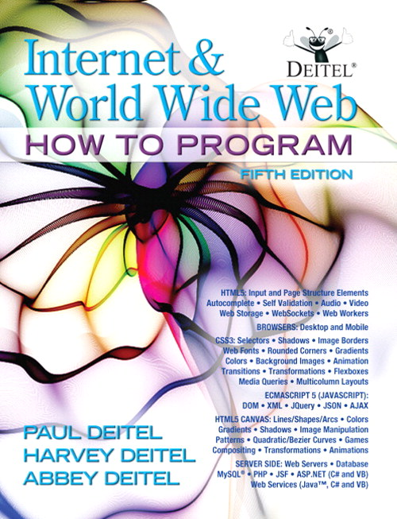

Poglavje 3 P1.2 Osnovna spletna standarda HTML in CSS

P1.2
Sodelovalna tabla, ki jo bomo uporabljali pred in med predavanji ter je namenjena odložišču za vprašanja in komentarje.
Vsi testni primeri, predstavljeni v okviru predavanja P1.2, so na voljo v GitHub repozitoriju SP-2023-2024/Snippets.
3.1 HTML
3.1.1 Enostaven primer HTML5 dokumenta
Oglejmo si najbolj preprost HTML5 dokument in njegove osnovne gradnike.
pozdravljeni.html
<!DOCTYPE html>
<!-- Prvi HTML5 primer -->
<html lang="sl">
<head>
<meta charset="utf-8" />
<title>Pozdravljeni</title>
</head>
<body>
<p>Lepo pozdravljeni pri predmetu Spletno programiranje!</p>
</body>
</html>Kot prikazuje slika 3.1, se v osrednjem delu prikaže vsebina našega testnega dokumenta, tj. sporočilo Lepo pozdravljeni pri predmetu Spletno programiranje!, medtem ko se naslov spletne strani Pozdravljeni prikaže v imenu zavihka.
Slika 3.1: Izgled preprostega HTML5 dokumenta v spletnem brskalniku
V testnem primeru najprej opredelimo deklaracijo tipa dokumenta50 DOCTYPE, ki je v HTML5 dokumentih obvezen in brskalniku sporoči, naj stran prikaže v standardnem načinu, glede na HTML in CSS specifikacije. Nekateri brskalniki namreč delujejo tudi v prilagodljivem načinu, ki je združljiv s spletnimi stranmi, ki niso skladne z najnovejšimi standardi.
V našem testnem dokumentu smo uporabili tudi prazne vrstice, ki so prisotne zgolj zaradi lažje berljivosti izvorne kode dokumenta, brskalniki jih namreč ignorirajo.
Uporabili smo tudi HTML5 komentarje za izboljšanje berljivosti izvorne kode in dodatno opisovanje. HTML5 komentarji se začnejo z <!-- in končajo z -->. Brskalnik jih, podobno kot prazne vrstice, ignorira.
HTML5 oznake vsebujejo besedilo (in slike, zvok ter video posnetke), ki predstavljajo vsebino dokumenta ter elemente, ki predstavljajo strukturo in pomen. Eden izmed pomembnejših elementov je <html>, ki je večvrstični. Omenjen element ima opredeljen tudi atribut lang, s katerim določimo jezik spletne strani. Znotraj <html> elementa lahko najdemo naslednja pomembna elementa <head> ter <body>. Znotraj elementa <head> lahko najdemo metapodatke o dokumentu, kot je npr. nabor znakov <meta charset="utf-8">, ki pomaga brskalniku pri prikazu ustreznih znakov, naslov <title> ter tudi navodila za prikaz dokumenta v obliki CSS3 prekrivnih slogov51 ter programov, ki se izvajajo na strani odjemalca in se imenujejo skripte.
Večina HTML5 elementov ima začetno (npr. <body>) in končno oznako (npr. </body>). Obstajajo pa tudi prazni HTML5 elementi, ki nimajo končne oznake (npr. <img>). Poleg tega lahko v začetno oznako elementa vključimo tudi atribute, ki dodatno opisujejo izbran element. Vsak atribut sestavljata ime in vrednost, ki sta ločena z znakom =.
Namig: Imena elementov in atributov niso občutljiva na majhne oz. velike črke (uporabljamo lahko oboje), vendar se priporoča uporaba zgolj majhnih črk.
Element <title> je primer ugnezdenega elementa, ker se nahaja znotraj glave, tj. med oznakama <head> in </head>. Element title drugače opredeljuje naslov dokumenta in ga brskalnik po navadi prikaže v zgornjem delu okna (npr. v imenu zavihka brskalnika Chrome na sliki 3.1). Vsebino zavihka <title> uporabljajo tudi spletni iskalniki pri indeksiranju spletnih strani, ko prikazujejo rezultate iskanja.
Namig: Pri pripravi izvorne kode HTML5 dokumenta se priporoča zamik ugnezdenih elementov, kar pripomore pri berljivosti in jasnosti strukture dokumenta.
Element odstavka <p> se uporablja za opredelitev strukture dokumenta, in sicer se besedilo znotraj oznak <p> in </p> prikaže v obliki odstavka.
3.1.2 Ustreznost HTML5 dokumenta
Pri pripravi HTML5 dokumentov je pomembno, da uporabljamo pravilno sintakso, saj na ta način poskrbimo, da se bo naša spletna stran pravilno prikazala v večini brskalnikov. Za lažje preverjanje ustreznosti HTML5 dokumentov je na voljo storitev za validacijo, ki so jo pripravili pri W3C, in sicer je na voljo na spletnem naslovu https://validator.w3.org.
Na voljo imamo tri načine preverjanja ustreznosti vsebine:
- Validate by URI, kjer vnesemo spletni naslov obstoječe spletne strani,
- Validate by File Upload, kjer posredujemo svojo HTML5 datoteko in
- Validate by Direct Input, kjer v spletni obrazec ročno vnesemo izvorno kodo HTML5 dokumenta.
Namig: Večina spletnih brskalnikov poskuša prikazati HTML5 dokument tudi, če le-ta vsebuje napake. Pri tem lahko pride do nepričakovanih in nepredvidenih rezultatov, zato se vedno priporoča uporaba storitve za validacijo HTML5 dokumentov.
Opomba: URI je enolični identifikator vira, medtem ko je URL, enolični identifikator spletnega naslova, njegova podmnožica. Bolj podrobno primerjavo najdete tukaj.
3.1.3 Naslovi
Nekateri deli besedila so v HTML5 dokumentih bolj pomembni kot ostali. V standardu HTML5 je na voljo 6 naslovnih elementov (od h1 do h6) z različnimi ravnmi pomembnosti.
naslovi.html
<!DOCTYPE html>
<!-- Naslovni elementi od h1 do h6 -->
<html lang="sl">
<head>
<meta charset="utf-8" />
<title>Naslovi</title>
</head>
<body>
<h1>Naslov 1. ravni</h1>
<h2>Naslov 2. ravni</h2>
<h3>Naslov 3. ravni</h3>
<h4>Naslov 4. ravni</h4>
<h5>Naslov 5. ravni</h5>
<h6>Naslov 6. ravni</h6>
</body>
</html>Naslovni element h1 je najbolj pomemben in ga brskalniki po navadi prikažejo z večjo pisavo kot ostale. Vsak naslednji naslovni element (h2, h3 itd.) je nato prikazan z vsakič manjšo pisavo, kot je prikazano na sliki 3.2.
Slika 3.2: Naslovni elementi od h1 do h6
3.1.4 Povezave
Ena izmed najbolj pomembnih značilnosti standarda HTML so spletne povezave oz. hiperpovezave, ki referencirajo ostale vire, kot so npr. dokumenti in slike.
povezave.html
<!DOCTYPE html>
<!-- Povezave na druge spletne strani -->
<html lang="sl">
<head>
<meta charset="utf-8" />
<title>Povezave</title>
</head>
<body>
<h1>Nekaj zanimivih spletnih strani:</h1>
<p><strong>S klikom na ime boste obiskali želeno spletno stran.</strong></p>
<p><a href="https://eon.tv/">EON TV</a></p>
<p><a href="https://www.coursera.org/">Coursera</a></p>
<p><a href="https://lifehacker.com/">Lifehacker</a></p>
<p>
Izvajalcu predmeta lahko pošljete tudi
<a href="mailto:Dejan.Lavbic@fri.uni-lj.si">elektronsko sporočilo</a>.
</p>
</body>
</html>Ko uporabnik klikne na povezavo, brskalnik to poveže z neko akcijo (npr. preusmeritev na novo spletno stran ali zagon programa za elektronsko pošto). Na vsak prikazan element lahko dodamo povezavo. Spletni brskalniki povezavo podčrtajo in jo privzeto obarvajo z modro barvo, tako da lahko uporabniki takoj ločijo povezavo od navadnega besedila (glej sliko 3.3).
Slika 3.3: Povezovanje na ostale spletne strani
Uporabljen je tudi element <strong>, ki opredeli pomembnost označenega besedila. Spletni brskalniki v takšnem primeru besedilo po navadi prikažejo z okrepljeno pisavo.
Za povezave v HTML5 uporabljamo gradnik <a> (anchor52). Povezavo URL naslova nastavimo kot vsebino atributa href (hypertext reference53) in predstavlja lokacijo vira, ki je lahko:
- nova spletna stran ali lokacija na trenutni spletni strani,
- datoteka,
- elektronski naslov.
Namig: Uporaba enojnih oz. dvojnih narekovajev pri vrednostih atributov v HTML5 standardu ni zahtevana, vendar je kljub temu priporočljiva.
Povezava je lahko tudi elektronski naslov, kjer se vrednost atributa href začne z rezervirano besedo mailto:, nato sledi elektronski naslov. Ob kliku na takšno povezavo se odpre privzeti program za elektronsko pošto.
3.1.5 Slike
Spletni dokumenti poleg besedila lahko vsebujejo tudi slike, animacije, zvok in video posnetke. Najbolj pogosto uporabljana formata slik na svetovnem spletu sta PNG54 in JPEG55.
slike.html
<!DOCTYPE html>
<!-- Vključevanje slik -->
<html lang="sl">
<head>
<meta charset="utf-8" />
<title>Slike</title>
</head>
<body>
<img
src="img/Deitel_2011.jpg"
width="100"
height="130"
alt="Internet and World Wide Web: How to program"
/>
<img
src="img/Haverbeke_2018.jpg"
width="100"
height="130"
alt="Eloquent JavaScript: A Modern Introduction to Programming"
/>
<img
src="img/Holmes_2019.jpg"
width="100"
height="130"
alt="Getting MEAN with Mongo, Express, Angular, and Node"
/>
</body>
</html>Primer prikazuje vključitev slik na spletno stran z uporabo oznake <img>. Lokacijo datoteke s sliko vključimo v vrednost atributa src (source). V našem primeru se slike nahajajo v podmapi img. Vključena sta tudi opcijska atributa width in height, ki dodatno omejujeta prikazano velikost slike v spletnem brskalniku. Če omenjena atributa izpustimo, bo slika prikazana v dejanski velikosti. Velikost slike je navedena v pikah56, ki predstavlja število slikovnih pik na zaslonu. V našem primeru je prva slika široka 100 pik in visoka 130 pik.
Namig: Pri vključevanju slike na spletno stran vedno uporabite atributa
widthinheight, tako da spletni brskalnik pri nalaganju strani lahko vnaprej predvideva, koliko prostora bo slika zasedla, še preden jo v celoti naloži.
Namig: Uporabi širine in višine slike, ki spreminja razmerje med izvorno širino in višino slike, se je treba izogibati, saj bo slika v takšnem primeru popačena.
Slika 3.4: Vključevanje slik v spletni dokument
Nekateri brskalniki slike ne znajo ali ne morejo prikazati, zato mora vsaka slika po HTML5 standardu vsebovati tudi alt atribut, čigar vrednost se prikaže namesto slike, če pride do takšne situacije. Omenjen atribut je pomemben tudi za uporabo pri slabovidnih uporabnikih, ki uporabljajo dodatke za sintezo govora.
Nekateri HTML5 elementi so prazni in vsebujejo zgolj atribute brez besedila med začetno in končno oznako. Kljub temu da to ni zahteva HTML5 standarda, lahko tudi prazne elemente zaključimo z desno poševnico /, kot je prikazano na naslednjem primeru:
3.1.6 Posebni znaki in vodoravne črte
Pri vključevanju posebnih znakov v HTML5 dokument moramo biti pozorni - nekaterih simbolov sploh ne najdemo na tipkovnici (npr. ©), medtem ko drugi (npr. <) povzročijo sintaktične napake pri poskusu prikaza strani:
V zgornjem primeru je problematičen znak manj (<), ki je rezerviran za začetne in končne oznake, kot sta to <p> in </p>. V jeziku HTML5 imamo zato na voljo reference znakov (v obliki &koda;), ki so rezervirani za prikaz posebnih znakov (glej tabelo 3.1).
Zgornji primer bi tako pravilno zapisali:
| Simbol | Opis | Referenca znaka |
|---|---|---|
&
|
znak IN |
&
|
'
|
opuščaj |
'
|
>
|
večje |
>
|
<
|
manjše |
<
|
| ” | dvojni narekovaj |
"
|
| presledek |
|
|
©
|
avtorska pravica |
©
|
——
|
pomišljaj |
—
|
–
|
vezaj |
–
|
V primeru vključevanja posebnih znakov je prikazan tudi znak z uporabo reference znaka &, ki v HTML5 standardu sicer ni zahtevan, vendar še vedno deluje. V testnem primeru je vključena tudi vodoravna črta, kar dosežemo z uporabo oznake <hr>. V primeru tega elementa gre za t.i. zapuščino, katere uporaba se ne priporoča. Večina spletnih brskalnikov takšno vodoravno črto prikaže z dodatnimi presledki pred in za njo.
posebni_znaki.html
<!DOCTYPE html>
<!-- Vključevanje posebnih znakov -->
<html lang="sl">
<head>
<meta charset="utf-8" />
<title>Posebni znaki</title>
</head>
<body>
<p>
M&M bonbončki so odlični in so zaščitena blagovna znamka © Mars.
</p>
<p>
<del>
Iz te spletne strani lahko povlečete 3.14 x 10<sup>2</sup>
podatkov.
</del>
Prvi podatek v seriji je x<sub>1</sub>.
</p>
<hr />
<p>Opomba: < ¼ podatkov spletne strani se dnevno osveži.</p>
</body>
</html>Uporabljeni so tudi trije novi HTML5 gradniki. Oznako <del> večina spletnih brskalnikov prikaže kot prečrtano besedilo, s katero lahko prikažemo sled spreminjanja besedila. Na voljo so tudi elementi za podpisovanje (indeks) <sub> in nadpisovanje besedila <sup>, ki besedilo dvignejo nad ali spustijo pod raven običajnega besedila in ga prikažejo v manjši pisavi.
Slika 3.5: Vključevanje posebnih znakov v spletni dokument
3.1.7 Seznami
Seznami v HTML5 standardu so dvojni:
Elemente posameznega seznama vključimo v <li> gradnike. Pri sestavljanju seznamov imamo na voljo veliko fleksibilnosti, saj jih lahko tudi gnezdimo, kot to prikazuje naslednji primer na sliki 3.6.
seznami.html
<!DOCTYPE html>
<!-- Urejeni, neurejeni in ugnezdeni seznami -->
<html lang="sl">
<head>
<meta charset="utf-8" />
<title>Seznami</title>
</head>
<body>
<h1>Prednosti interneta:</h1>
<ul>
<li>spoznaš lahko ljudi iz različnih držav,</li>
<li>
dostop do gradiva, ko postane javno dostopno:
<ul>
<li>igre,</li>
<li>
aplikacije,
<ol>
<li>za podjetja,</li>
<li>za zasebne uporabnike,</li>
</ol>
</li>
<li>novice,</li>
<li>nakupovanje,</li>
<li>
programski jeziki,
<ol>
<li>HTML,</li>
<li>CSS,</li>
<li>JavaScript,</li>
<li>Node.js,</li>
</ol>
</li>
</ul>
</li>
<li>povezave,</li>
<li>idr.</li>
</ul>
</body>
</html>
Slika 3.6: Urejeni, neurejeni in ugnezdeni seznami
3.1.8 Tabele
Tabele se uporabljajo za organizacijo podatkov v vrstice in stolpce. Kreiramo jo s pomočjo HTML5 gradnika <table> (glej izvorno kodo in sliko 3.7). Uporabimo lahko tudi dodatne atribute, v našem primeru je to border="1", ki poda brskalniku navodilo, naj tabelo prikaže z obrobo. Omenjenega atributa se raje izogibajmo, saj imamo v CSS3 na voljo številne možnosti oblikovanja tabele, ki jih bomo predstavili v nadaljevanju.
tabele.html
<!DOCTYPE html>
<!-- Enostavna tabela -->
<html lang="sl">
<head>
<meta charset="utf-8" />
<title>Tabele</title>
</head>
<body>
<table border="1">
<caption>
<strong>Cena sadja</strong>
</caption>
<thead>
<tr>
<th scope="col">Sadje</th>
<th scope="col">Cena</th>
</tr>
</thead>
<tfoot>
<tr>
<th scope="col">Skupaj</th>
<th scope="col">3,00 €</th>
</tr>
</tfoot>
<tbody>
<tr>
<td>banana</td>
<td>1,00 €</td>
</tr>
<tr>
<td>jabolko</td>
<td>0,50 €</td>
</tr>
<tr>
<td>pomaranča</td>
<td>1,50 €</td>
</tr>
</tbody>
</table>
</body>
</html>Tabeli lahko dodamo naslov, ki je zajet v oznaki <caption>. Tabela je sestavljena iz 3 ključnih delov:
- glave59, ki je opredeljena znotraj oznake
<thead>, - telesa60, ki je opredeljeno znotraj oznake
<tbody>in - noge61, ki je opredeljena znotraj oznake
<tfoot>.
Znotraj posameznih delov tabele so podatki organizirani v vrsticah z uporabo gradnika <tr>62. Posamezne celice v vrstici pa so v glavi in nogi opredeljene z gradnikom <th>63, v telesu pa z gradnikom <td>64. Brskalniki po navadi vsebino gradnika <th> prikažejo z odebeljeno pisavo (glej sliko 3.7).
Opomba: Pri gradnikih
<th>je priporočljiva uporaba atributascope, s katerim povemo kontekst, na katerega se na naslov celice nanaša (v našem primeru gre za naslov stolpca).
Slika 3.7: Enostavna tabela
Pri organizaciji podatkov v tabelah pa imamo na voljo tudi bolj napredne postavitve z uporabo atributov rowspan in colspan, ki vsebino celice porazdelijo čez več vrstic ali stolpcev. Če si pogledamo naslednji primer, ki je prikazan na sliki 3.8, lahko opazimo, da je začetna slika umeščena čez 2 vrstici (rowspan="2") tabele. Podobno je naslovna celica z vsebino “Primerjava kač …” umeščena čez 5 stolpcev (colspan="5") tabele.
tabele_napredne.html
<!DOCTYPE html>
<!-- Napredna tabela -->
<html lang="sl">
<head>
<meta charset="utf-8" />
<title>Napredne tabele</title>
</head>
<body>
<table border="1">
<caption>
Bolj kompleksna tabela
</caption>
<thead>
<tr>
<th rowspan="2" scope="col">
<img src="img/kaca.png" width="150" alt="Slika kače" />
</th>
<th colspan="5" scope="col">
<strong>Primerjava kač</strong><br />Stanje z dne 4. 10. 2017
</th>
</tr>
<tr>
<th scope="col">strupena?</th>
<th scope="col">dolžina</th>
<th scope="col">teža</th>
<th scope="col">geografska lokacija</th>
<th scope="col">življenjsko okolje</th>
</tr>
</thead>
<tbody>
<tr>
<th>Piton</th>
<td>ne</td>
<td>6,5 m</td>
<td>60 kg</td>
<td>Afrika in Azija</td>
<td>travnate površine in vznožja hribov</td>
</tr>
<tr>
<th>Anakonda</th>
<td>ne</td>
<td>5 m</td>
<td>95 kg</td>
<td>Južna Amerika</td>
<td>močvirja in reke</td>
</tr>
</tbody>
</table>
</body>
</html>V omenjenem primeru je vpeljan tudi gradnik <br>, ki predstavlja prelom vrstice65. Uporaba tega gradnika ni več priporočljiva, saj imamo na voljo boljši pristop z uporabo CSS slogov, kar bomo tudi predstavili v nadaljevanju.
Slika 3.8: Napredna tabela
3.1.9 Spletni obrazci
Pri pregledovanju spletnih strani morajo uporabniki pogosto posredovati podatke, kot so npr. ključne besede poizvedbe, elektronski naslov, poštna številka ipd. V HTML5 lahko zbiranje podatkov od uporabnika implementiramo s pomočjo spletnih obrazcev z gradnikom <form>. Podatki, ki jih uporabnik vnese preko spletnega obrazca, se posredujejo na strežnik.
Slika 3.9 prikazuje primer vprašalnika v obliki spletnega obrazca. Podatki se na strežnik posredujejo ob uporabnikovem kliku na gumb Pošlji podatke in takrat se vsebina obrazca posreduje na spletni naslov https://teaching.lavbic.net (action="https://teaching.lavbic.net"), in sicer s pomočjo POST metode (method="post"). Namesto POST metode bi lahko npr. uporabili tudi GET metodo, kjer bi se podatki na strežnik posredovali kot parametri URL zahteve.
obrazci.html
<!DOCTYPE html>
<!-- Različni gradniki spletnega obrazca -->
<html lang="sl">
<head>
<meta charset="utf-8" />
<title>Spletni obrazci</title>
</head>
<body>
<h1>Obrazec za komentarje</h1>
<p>Prosim izpolnite naslednji vprašalnik za izboljšavo spletne strani.</p>
<form method="post" action="https://teaching.lavbic.net">
<input type="hidden" name="naslovnik" value="Dejan@lavbic.net" />
<input type="hidden" name="naslov" value="Rezultati vprašalnika" />
<input type="hidden" name="preusmeritev" value="obrazec.html" />
<p>
<label>Ime: <input name="ime" type="text" size="25" /></label>
</p>
<p>
<label>
Komentarji:<br />
<textarea name="komentarji" rows="4" cols="36">
Vnesite komentarje.
</textarea>
</label>
</p>
<p>
<label>
Elektronski naslov: <input name="email" type="password" size="25" />
</label>
</p>
<p>
<strong>Kaj vam je bilo všeč?</strong><br />
<label>
Struktura strani
<input name="biloVsec" type="checkbox" value="struktura" />
</label>
<label>
Povezave <input name="biloVsec" type="checkbox" value="povezave" />
</label>
<label>
Enostavnost uporabe
<input name="biloVsec" type="checkbox" value="enostavnost" />
</label>
<label>
Slike <input name="biloVsec" type="checkbox" value="slike" />
</label>
<label>
Izvorna koda <input name="biloVsec" type="checkbox" value="koda" />
</label>
</p>
<p>
<strong>Kako ste našli našo stran?</strong><br />
<label>
Spletni iskalnik
<input name="kakoNasli" type="radio" value="iskalnik" />
</label>
<label>
Povezava iz druge strani
<input name="kakoNasli" type="radio" value="povezava" />
</label>
<label>
Spletna učilnica
<input name="kakoNasli" type="radio" value="eUcilnica" />
</label>
<label>
Referenca v knjigi
<input name="kakoNasli" type="radio" value="knjiga" />
</label>
<label>
Ostalo <input name="kakoNasli" type="radio" value="ostalo" />
</label>
</p>
<p>
<label>
Ocenite našo stran:
<select name="ocena">
<option selected>odlično</option>
<option>10</option>
<option>9</option>
<option>8</option>
<option>7</option>
<option>6</option>
<option>5</option>
<option>4</option>
<option>3</option>
<option>2</option>
<option>1</option>
<option>obupno</option>
</select>
</label>
</p>
<p>
<input type="submit" value="Pošlji podatke" />
<input type="reset" value="Izbriši vnose" />
</p>
</form>
</body>
</html>Pri spletnem obrazcu lahko vključimo tudi komponente, ki uporabniku niso vidne, in sicer v obliki skritih polj <input type="hidden" ...>. Vsebina teh polj se tudi, poleg tistih, ki jih vnese uporabnik, posreduje na strežnik.
Najbolj pogosto uporabljen gradnik spletnih obrazcev je besedilno vnosno polje <input type="text" ...>, kjer lahko dodatno opredelimo število vidnih znakov v vnosnem polju (npr. size="25"), opcijsko pa lahko določimo tudi največje število znakov, ki jih je mogoče vnesti (atribut maxlength).
Na spletni obrazec lahko dodamo tudi akcijske gumbe; v našem primeru sta to dva gumba Pošlji podatke (<input type="submit" ...>) in Izbriši vnose (<input type="reset" ...>). Gumb tipa submit posreduje vnesene podatke na spletni naslov, opredeljen v atributu action gradnika form, medtem ko gumb tipa reset izbriše trenutne vnose uporabnika v obrazcu.
Slika 3.9: Različni gradniki spletnega obrazca
Poleg besedilnih vnosnih polj imamo na voljo tudi vnos besedila v več vrsticah66, kjer lahko z atributoma rows in cols omejimo velikost vnosnega polja. Če želimo, da ima vnosno polje vnaprej opredeljeno vrednost, jo preprosto zapišemo med začetno in končno oznako gradnika <textarea>.
Če želimo na zaslonu prikriti vsebino vnosnega polja, lahko uporabimo vnosno polje za gesla, ki je po načinu delovanja sorodna besedilnemu vnosnemu polju, z razliko tipa polja (<input type="password" ...>).
Če želimo uporabniku omogočiti izbiro več vrednosti, lahko uporabimo gradnik večkratne izbire67, kjer uporabnik izbere 1 ali več možnosti. Takšne gradnike lahko uporabimo samostojno ali v skupinah (tj. uporabimo isto ime, npr. <input name="biloVsec" type="checkbox" ...>).
Namig: Če imamo na spletnem obrazcu več gradnikov z istim imenom, morajo ti gradniki vračati različne vrednosti, sicer jih strežnik ob prejemu, med seboj ne bo znal ločiti.
Uporabnik ima pri vnosu več vrednosti na voljo še dva pristopa. Gre za gradnik izbire, ki je lahko v podobni obliki kot gradnik večkratne izbire, s to razliko, da nam omogoča izbiro zgolj ene možnosti68 (<input name="kakoNasli" type="radio" ...>).
Namig: Če pri gradniku izbire
<radio>ne nastavimo vrednost atributaname, pride do napake, ker bo v tem primeru uporabnik lahko izbral vse vrednosti.
Druga predstavitev gradnika izbire pa je v obliki izbire vrednosti iz menija (<select>), kjer posamezne možnosti opredelimo z ugnezdenimi elementi <option>. Če želimo, da je določena izbira predizbrana, potem ji nastavimo atribut selected.
3.1.10 Interne povezave
V poglavju 3.1.4 je bilo predstavljeno povezovanje različnih virov med seboj, v okviru HTML5 standarda pa lahko uporabimo tudi interne povezave znotraj dokumenta. Ta mehanizem se uporablja predvsem za navigacijo v okviru obstoječe strani, kjer se nahaja večja količina gradiva. Dober primer je tudi ta skripta, ki ima na levi strani kazalo, kjer se s klikom na ime poglavja prestavite na zahtevano lokacijo na strani.
interne_povezave.html
<!DOCTYPE html>
<!-- Interne povezave, znotraj dokumenta -->
<html lang="sl">
<head>
<meta charset="utf-8" />
<title>Interne povezave</title>
</head>
<body>
<h1>Operacija Anakonda</h1>
<ul>
<li><a href="#ozadje">Ozadje in priprave na operacijo</a></li>
<li><a href="#zacetek">Začetek operacije</a></li>
<li><a href="#Takur-Gar">Boji za Takur Gar</a></li>
<li><a href="#sever">Boji na severu</a></li>
<li><a href="#zakljucek">Zaključek operacije</a></li>
</ul>
<h2 id="ozadje">Ozadje in priprave na operacijo</h2>
<p>...</p>
<h2 id="zacetek">Začetek operacije</h2>
<p>...</p>
<h2 id="Takur-Gar">Boji za Takur Gar</h2>
<p>...</p>
<h3>Tretji poskus</h3>
<p>...</p>
<h3>Zadnja žrtev in evakuacija</h3>
<p>...</p>
<h2 id="sever">Boji na severu</h2>
<p>...</p>
<h2 id="zakljucek">Zaključek operacije</h2>
<p>...</p>
</body>
</html>Poenostavljen primer navigacije po strani je prikazan tudi na primeru s slike 3.10, kjer imamo kazalo in se s klikom na element kazala prestavimo na zahtevano lokacijo na strani. Na strani najprej željenim pomembnim elementom (v našem primeru so to naslovi na 2. ravni) nastavimo vrednost parametra id. Pri referenciranju oz. kreiranju povezave pa se na omenjeno vrednost parametra id sklicujemo (npr. <a href="#ozadje">Ozadje in priprave na operacijo</a>).

Slika 3.10: Interne povezave, znotraj dokumenta
Referenciramo lahko tudi točno določeno lokacijo na poljubni spletni strani, kot je to prikazano v naslednjem primeru, kjer gre za povezavo na skripto pri tem predmetu, in sicer na uvodno poglavje z naslovom Terminski plan izvajanja predmeta:
3.1.11 Meta elementi
Spletni iskalniki indeksirajo spletne strani tako, da obiskujejo povezave iz ene spletne strani na drugo in hranijo podatke o identifikaciji in klasifikaciji posamezne strani. Eden izmed načinov, kako spletni iskalniki indeksirajo spletne strani, je z uporabo meta elementov, ki opredeljujejo dodatne (meta)podatke o spletni strani. Uporaba meta elementov je tudi eden izmed načinov za optimizacijo spletnih strani69. Pri uporabi gradnika <meta> sta pomembna atributa name, ki opredeljuje tip meta elementa, in content, ki opredeljuje podatek za lažje indeksiranje s strani spletnega iskalnika.
meta_oznake.html
<!DOCTYPE html>
<!-- Meta oznake za spletne iskalnike-->
<html lang="sl">
<head>
<meta charset="utf-8" />
<title>Meta oznake</title>
<meta
name="keywords"
content="SP, SPA, Node.js, JavaScript, HTML, CSS,
Heroku, Cloud9, GitHub, Pug, Express, MongoDB"
/>
<meta
name="description"
content="Vsebina predmeta Spletno programiranje je
osredotočeno na celostni razvoj spletnih aplikacij z uporabo MEAN
arhitekture in MVC pristopa."
/>
</head>
<body>
<h1>Spletno programiranje</h1>
<h2>Uvod</h2>
<p>
Skripta pri predmetu <strong>Spletno programiranje</strong>, ki jo izvaja
<a href="http://www.lavbic.net/">doc. dr. Dejan Lavbič</a> na
<a href="http://www.fri.uni-lj.si/">
Fakulteti za računalništvo in informatiko
</a>
, <a href="http://www.uni-lj.si/">Univerze v Ljubljani</a>.
</p>
</body>
</html>Najbolj pogosta meta elementa sta keywords in description. Vsebina elementa keywords spletnemu iskalniku ponudi množico ključnih besed, ki opisujejo spletno stran, medtem ko vsebina elementa description predstavlja kratek opis vsebine spletne strani. Spletni iskalniki vsebino elementa description pogosto uporabijo za prikaz opisa zadetka na seznamu zadetkov.
Namig: Meta elementi uporabnikom neposredno niso vidni, zato jih tudi vključimo znotraj oznake
<head>, sicer jih spletni iskalnik ne uporabi.
3.1.12 Napredni gradniki spletnih obrazcev
HTML5 standard opredeljuje množico naprednih gradnikov spletnih obrazcev, ki pa mogoče še niso v celoti podprti s strani spletnih brskalnikov. V nadaljevanju je predstavljen primer, kjer je vključena večina teh gradnikov in demonstracija delovanja.
obrazci_napredno.html
<!DOCTYPE html>
<!-- Napredni gradniki spletnih obrazcev-->
<html lang="sl">
<head>
<meta charset="utf-8" />
<title>Napredni gradniki spletnih obrazcev</title>
</head>
<body>
<h1>Napredni gradniki spletnih obrazcev</h1>
<p>Prikaz delovanja naprednih gradnikov spletnih obrazcev.</p>
<form method="post" action="https://teaching.lavbic.net">
<p>
<label>
<strong>Barva</strong>:
<input type="color" autofocus />
(šestnajstiška koda, npr. #ADD8E6)
</label>
</p>
<p>
<label>
<strong>Datum</strong>: <input type="date" /> (dd. mm. yyyy)
</label>
</p>
<p>
<label>
<strong>Datum in čas</strong>: <input type="datetime-local" />
(dd. mm. yyyy hh:mm)
</label>
</p>
<p>
<label>
<strong>E-mail</strong>:
<input type="email" placeholder="uporabnik@domena.si" required />
(uporabnik@domena.si)
</label>
</p>
<p>
<label>
<strong>Mesec</strong>: <input type="month" /> (mmm llll)
</label>
</p>
<p>
<label>
<strong>Število</strong>:
<input type="number" min="0" max="7" step="1" value="4" />
(vnesi število med 0 in 7)
</label>
</p>
<p>
<label>
<strong>Območje</strong>: 0
<input type="range" min="0" max="20" value="10" /> 20
</label>
</p>
<p>
<label>
<strong>Iskanje</strong>:
<input type="search" placeholder="iskalni niz" />
(vnesi iskalni niz)
</label>
</p>
<p>
<label>
<strong>Telefon</strong>:
<input
type="tel"
placeholder="(###) ###-####"
pattern="\(\d{3}\) +\d{3}-\d{4}"
required
/>
(###) ###-####
</label>
</p>
<p>
<label><strong>Čas</strong>: <input type="time" /> (hh:mm)</label>
</p>
<p>
<label>
<strong>URL</strong>:
<input type="url" placeholder="http://www.domena.si" />
(http://www.domena.si)
</label>
</p>
<p>
<label>
<strong>Teden</strong>: <input type="week" />
(ww. teden, yyyy)
</label>
</p>
<p>
<input type="submit" value="Pošlji podatke" />
<input type="reset" value="Izbriši vnose" />
</p>
</form>
</body>
</html>Vnosno polje tipa color (<input type="color" ... />) omogoča izbiro barve, kjer se uporabniku prikaže sistemska paleta barv (odvisna od operacijskega sistema). Vrednost polja je po navadi v obliki šestnajstiške kode barve (npr. #ADD8E6).
Pri istem primeru je prikazana uporaba opcijskega atributa autofocus, ki se lahko uporablja zgolj na enem izbranem gradniku vnosnega obrazca in je tudi samodejno izbran (fokus je na tem elementu). Spletni brskalnik Chrome takšen gradnik označi npr. z modro obrobo.
Običajno je preverjanje ustreznosti uporabniškega vnosa zahtevno, saj je potrebna JavaScript koda, ki preveri, ali so vneseni podatki ustrezni. Vsi napredni gradniki spletnih obrazcev imajo vgrajeno podporo ustreznosti vnosa. Ko uporabnik vnese podatke in jih želi posredovati na strežnik, spletni brskalnik preveri ustreznost vnosa in v primeru napak obvesti uporabnika ter podatkov ne posreduje na strežnik (npr. napačen vnos elektronskega naslova na sliki 3.11).
Slika 3.11: Samodejno preverjanje vsebine naprednih gradnikov spletnih obrazcev
Namig: Kljub podpori preverjanja ustreznosti uporabniškega vnosa na strani odjemalca, je potrebno podatke vedno preveriti tudi na strani strežnika.
Vnosno polje tipa date (<input type="date" />) omogoča vnos datuma v določeni obliki (npr. dd. mm. yyyy). Nekateri spletni brskalniki (npr. Chrome, Safari idr.) ob poskusu vnosa datuma prikažejo koledar, s pomočjo katerega lahko lažje izberemo datum, kot to prikazuje slika 3.12.

Slika 3.12: Izbira datuma iz koledarja
Vnosno polje tipa datetime (<input type="datetime-local" ... />) omogoča vnos datuma in časa v določeni obliki (npr. dd. mm. yyyy hh:mm). Več o podatkovnem tipu datetime-local lahko najdete na W3C spletni strani.
Vnosno polje tipa email (<input type="email" ... />) omogoča vnos enega elektronskega naslova ali množice elektronskih naslovov, ki so medsebojno ločeni z vejico. Spletni brskalniki takšno vnosno polje prikažejo kot navadno vnosno polje, ki pa se preverja v skladu s pravili za zapis elektronskega naslova (glej sliko 3.11).
Pri istem primeru (<input type="email" placeholder="uporabnik@domena.si" ... />) je prikazana uporaba opcijskega atributa placeholder, ki nam omogoča prikaz začasnega besedila znotraj elementa (npr. uporabnik@domena.si na sliki 3.14). Barva tega besedila je svetlo sive barve, ko pa začnemo z vnosom lastnega besedila, placeholder besedilo izgine in se tudi nikoli ne posreduje na strežnik.
Prav tako je pri tem primeru (<input type="email" ... required />) prikazana uporaba opcijskega atributa required, ki ne dovoli posredovanja podatkov na strežnik, če vrednost tega polja ni izpolnjena (glej sliko 3.13).
Slika 3.13: Zahtevana vrednost polja pri posredovanju podatkov na strežnik
Vnosno polje month (<input type="month" />) omogoča vnos meseca v določeni obliki (npr. mmm llll). V primeru, da je vnos napačen, se uporabnika ob poskusu posredovanja podatkov na strežnik, pozove naj vnese podatek v ustrezni obliki.
Vnosno polje number (<input type="number" min="0" max="7" step="1" value="4" />) omogoča vnos številčne vrednosti v določenem intervalu, ki je določen z vrednostima atributov min in max. Nekateri brskalniki vnosnemu polju dodajo tudi možnost zmanjšanja in povečevanja vrednosti, kjer je korak določen z vrednostjo atributa step, medtem ko začetno vrednost vnosnega polja določimo z vrednostjo atributa value.
Podobno lahko številčno vrednost vnesemo s pomočjo vnosnega polja range (<input type="range" min="0" max="20" value="10" />), kjer je vnosno polje v spletnem brskalniku prikazano kot drsnik, ki ga premikamo med najmanjšo (vrednost min atributa) in največjo (vrednost max atributa) vrednostjo. Trenutne vrednosti spletni gradnik na žalost ne prikazuje, zgolj relacijo med največjo in najmanjšo vrednostjo, lahko pa to funkcionalnost dosežemo z uporabo jezika JavaScript.
Vnosno polje search (<input type="search" ... />) omogoča vnos iskalne poizvedbe in je funkcionalno ekvivalentno običajnemu vnosnemu polju s to razliko, da nekateri spletni brskalniki znotraj polja na desni strani prikažejo znak x, s pomočjo katerega lahko izbrišemo vsebino polja.
Vnosno polje tel (<input type="tel" placeholder="(###) ###-####" pattern="\(\d{3}\) \d{3}-\d{4}" required>) omogoča vnos telefonske številke, za katero lahko zahtevamo določen vzorec oz. obliko vnosa podatkov (t.j. vrednost atributa pattern, ki je v obliki regularnega izraza, npr. (###) ###-####, kjer znak # predstavlja števko).
Vnosno polje time (<input type="time" />) omogoča vnos časa v določeni obliki (npr. hh:mm).
Vnosno polje url (<input type="url" ... />) omogoča vnos URL naslova, kjer se preverja ustreznost vnesenega besedila v skladu s pravili za URL naslove.
Vnosno polje week (<input type="week" />) omogoča vnos tedna v določeni obliki (npr. ww. teden, yyyy). Nekateri spletni brskalniki (npr. Chrome) prikažejo koledar, s pomočjo katerega lahko lažje izberemo željeni teden.
Slika 3.14: Napredni gradniki spletnih obrazcev
3.1.13 Samodejno dopolnjevanje vrednosti pri vnosnih poljih
Atribut autocomplete (<form method="post" autocomplete="on">) se uporablja pri spletnih obrazcih za samodejno dopolnjevanje vrednosti pri vnosnih poljih glede na prejšnje vnose (npr. ime, priimek in elektronski naslov) kot je prikazano na sliki 3.15.
autocomplete.html
<!DOCTYPE html>
<!--Samodejno dopolnjevanje vrednosti pri vnosnih poljih -->
<html lang="sl">
<head>
<meta charset="utf-8" />
<title>Samodejno dopolnjevanje vrednosti</title>
</head>
<body>
<h1>Samodejno dopolnjevanje vrednosti</h1>
<p>
Prikaz samodejnega dopolnjevanja vrednosti pri naprednih gradnikih
spletnih obrazcev.
</p>
<form method="post" autocomplete="on">
<p>
<label>
<strong>Ime</strong>:
<input type="text" id="ime" placeholder="Ime" /> (Ime)
</label>
</p>
<p>
<label>
<strong>Priimek</strong>:
<input type="text" id="priimek" placeholder="Priimek" />
(Priimek)
</label>
</p>
<p>
<label>
<strong>E-mail</strong>:
<input type="email" id="email" placeholder="uporabnik@domena.si" />
(uporabnik@domena.si)
</label>
</p>
<p>
<label for="mesecRojstva">
<strong>Mesec rojstva</strong>:
<input
type="text"
id="mesecRojstva"
placeholder="Izberi mesec"
list="meseci"
/>
<datalist id="meseci">
<option value="Januar"></option>
<option value="Februar"></option>
<option value="Marec"></option>
<option value="April"></option>
<option value="Maj"></option>
<option value="Junij"></option>
<option value="Julij"></option>
<option value="Avgust"></option>
<option value="September"></option>
<option value="Oktober"></option>
<option value="November"></option>
<option value="December"></option>
</datalist>
</label>
</p>
<p>
<input type="submit" value="Pošlji podatke" />
<input type="reset" value="Izbriši vnose" />
</p>
</form>
</body>
</html>Samodejno dopolnjevanje vrednosti lahko omogočimo na vseh vnosnih poljih ali samo izbranih (npr. to funkcionalnost bi lahko izklopili z atributom autocomplete="off" v primeru številke kreditne kartice ali gesla).
Namig: Funkcionalnost samodejnega dopolnjevanja vrednosti vnosnih polj deluje le pri tistih vnosnih poljih, ki imajo nastavljen atribut
namealiid.
Slika 3.15: Samodejno dopolnjevanje vrednosti pri vnosnih poljih
Pri vnosnem polju, kjer je funkcionalnost samodejnega dopolnjevanja vrednosti vklopljena, bo ob vnosu nove vrednosti spletni brskalnik preveril, ali obstaja kakšen delni zadetek med prejšnjimi vnosi in ga bo prikazal v padajočem meniju, kjer lahko izberemo predlagano vrednost (glej primer vnosa imena na sliki 3.16).
Slika 3.16: Samodejno dopolnjevanje vrednosti pri vnosnih poljih, kjer si spletni brskalnik zapomni prejšnje vnose
S pomočjo gradnika <datalist> pa imamo možnost vnaprej opredeliti nabor dovoljenih vrednosti v vnosnem polju, kjer posamezno možnost zapišemo v obliki gradnika <option>. V tem primeru bo brskalnik pri vnosu vrednosti iskal med vnaprej opredeljenimi elementi in delne zadetke prikazal v obliki padajočega menija, kjer lahko izberemo predlagano vrednost (glej primer vnosa meseca rojstva na sliki 3.17).

Slika 3.17: Samodejno dopolnjevanje vrednosti pri vnosnih poljih, kjer so dovoljene vrednosti vnaprej opredeljene
3.1.14 Elementi za opredelitev strukture strani
HTML5 standard ima številne gradnike za opredelitev strukture strani, ki določene dele logično strukturirajo v naslove, noge, članke, navigacijska področja, slike itn.
struktura_strani.html
<!DOCTYPE html>
<!-- Elementi za opredelitev strukture strani -->
<html lang="sl">
<head>
<meta charset="utf-8" />
<title>Struktura strani</title>
</head>
<body>
<header>
<h1>Spletno programiranje</h1>
<time>2090-10-08</time>
</header>
<section id="1">
<h2>Splošne informacije</h2>
<p>
Dodatno gradivo pri predmetu je na voljo na
<a href="https://ucilnica.fri.uni-lj.si/course/view.php?id=74">
spletni učilnici
</a>
, medtem ko vsa komunikacija pri predmetu prav tako poteka preko forumov
na spletni učilnici.
</p>
<h3>Predavatelj</h3>
<figure>
<img src="img/Lavbic_Dejan_ninja.png" alt="Dejan Lavbič" />
<figcaption>doc. dr. <em>Dejan Lavbič</em></figcaption>
</figure>
<aside>Za vsebinska vprašanja uporabite forum.</aside>
<nav>
<ul>
<li>govorilne ure: nedelja, 02:00 – 03:00 (kabinet R2.49)</li>
<li>
spletne strani:
<a href="https://ucilnica.fri.uni-lj.si/course/view.php?id=74">
eUčilnica
</a>
in <a href="http://www.lavbic.net/pedagosko/">Lavbic.net</a>.
</li>
</ul>
</nav>
</section>
<section id="2">
<h2>Predavanja in vaje</h2>
<article>
<p>
Predavanja potekajo ob torkih med 11:00 in 14:00 v predavalnici 22.
</p>
<p>
Vaje se začnejo <mark>3. teden</mark> (od 15. 10. 2090 naprej),
termini posameznih ciklov so na voljo na urniku. Vsak študent obiskuje
svoj dodeljen termin, saj je število računalnikov omejeno.
</p>
<details>
<summary>Podrobno o vsebini</summary>
<p>
Pri predmetu se bomo posvetili pregledu nad tehnologijami, ki se
uporabljajo pri delovanju spleta, spletnih strežnikov, brskalnikov
in spletnih aplikacij.
</p>
<p>
Pregledali bomo osnove izdelave in oblikovanja spletnih strani
(<strong>HTML5</strong> in <strong>CSS3</strong>), jih nadgradili s
pregledom tehnologij na strani odjemalca
(<strong>JavaScript</strong>) in strežnika
(<strong>Node.js</strong>) ter implementirali REST API dostop do
podatkovne baze (<strong>MongoDB</strong>).
</p>
<p>
Cilj predmeta je študentu podati širino znanj, povezanih z
delovanjem raznovrstnih sodobnih spletnih tehnologij in razvojnih
okolij in študenta usposobiti za samostojno učenje novih heterogenih
tehnologij v razvoju ter ga predvsem seznaniti s
<strong>celostnim razvojem spletnih aplikacij</strong>.
</p>
</details>
</article>
</section>
<footer>
<h4>Ostale informacije</h4>
Trenutno smo z vsebino med 1. tednom
<meter min="1" max="16" value="3"></meter> 16. tednom.
<address>
Vsa ostala vprašanja na
<a href="mailto:Dejan.Lavbic@fri.uni-lj.si">
Dejan.Lavbic@fri.uni-lj.si
</a>
.
</address>
</footer>
</body>
</html>Gradnik <header> opredeli naslovnico strani, kjer je vključen naslov 1. stopnje in datum posodobitve.
V okviru naslovnice strani je uporabljen gradnik <time>, kjer lahko semantično opredelimo datum, dodamo pa lahko tudi čas.
Gradnik <nav> se uporablja za grupiranje navigacijskih povezav. V našem primeru smo ga uporabili za grupiranje različnih dodatnih spletnih strani za dostop do gradiva pri predmetu.
Za opisovanje slike na spletni strani smo uporabili gradnik <figure>, ki ga lahko nato z uporabo prekrivnih slogov dodatno prilagodimo. Gradnik <figcaption> je uporabljen za opredelitev naziva slike.
Gradnik <article> vsebuje vsebino, ki bi jo lahko potencialno uporabili tudi na kakšni drugi strani in je kot entiteta samostojna. V našem primeru gre za podrobnosti o predavanjih in vajah pri predmetu.
Gradnik <details>, skupaj z gradnikom <summary> spletni brskalnik prikaže v obliki strnjenega pogleda, in sicer prikaže vsebino gradnika <summary>, ki se s klikom na ikono desno od te vsebine razširi in prikaže se celotna vsebina gradnika <details>.

Slika 3.18: Elementi za opredelitev strukture strani
Gradnik <section> se uporablja za opis pomembnih delov dokumenta, ki se po navadi začnejo z določenim naslovnim besedilom. V kontekstu knjige bi to lahko bila poglavja v knjigi.
Gradnik <aside> opisuje vsebino, ki je povezana z bližnjo vsebino, vendar ni nujno neposredno povezana s tokom besedila.
Gradnik <meter> je vizualna predstavitev vrednosti v določenem številčnem intervalu. V našem primeru je to 3. teden med 1. in 16. tednom, kot je trajanje semestra.
Gradnik <footer> je noga, ki se uporablja za prikaz vsebine na dnu strani.
Uporabljen je tudi gradnik <mark>, s katerim označimo izbrano besedilo.
3.2 Prekrivni slogi (CSS)
3.2.1 Uvod
Prekrivni slogi70 CSS so tehnologija, potrjena s strani organizacije W3C, ki nam omogoča opredelitev izgleda elementov na spletni strani (npr. pisave, razmiki, velikosti, barve, položaj na strani idr.) ločeno od strukture in vsebine elementov (npr. besedila naslovov, vsebina odstavkov, povezav idr.). To ločevanje strukture od izgleda močno poenostavi vzdrževanje in spreminjanje spletnih strani, še posebej večjih.
Jezik HTML5 je bil zasnovan za opredelitev vsebine in strukture dokumenta. Čeprav lahko s pomočjo nekaterih atributov pri HTML5 elementih vplivamo na njihov prikaz v brskalniku, to ni priporočljivo, saj je ločevanje izgleda od vsebine zelo pomembno. To praktično pomeni, da je treba v primeru spremembe izgleda spletne strani zamenjati zgolj prekrivni slog, vsebina ostane nespremenjena.
Podobno kot pri HTML5 je tudi pri CSS na voljo storitev za validacijo, ki so jo pripravili pri W3C, in sicer je na voljo na spletnem naslovu https://jigsaw.w3.org/css-validator.
Na voljo imamo tri načine preverjanja ustreznosti vsebine:
- By URI, kjer vnesemo spletni naslov obstoječega prekrivnega sloga,
- By file upload, kjer posredujemo svojo CSS3 datoteko in
- By direct input, kjer v spletni obrazec ročno vnesemo izvorno kodo CSS3 dokumenta.
3.2.2 Neposredno opredeljeni slogi
V HTML5 dokumentu lahko neposredno opredelimo stil71 kot vsebino atributa style pri izbranem HTML5 gradniku.
Namig: Uporaba neposredno opredeljenih slogov dejansko ne loči predstavitve od vsebine, zato takšna praksa ni priporočljiva. Namesto neposredno opredeljenih slogov raje uporabite vgrajene sloge ali zunanje sloge, predstavljene v nadaljevanju.
neposredno_opredeljeni_slogi.html
<!DOCTYPE html>
<!-- Uporaba neposredno opredeljenih slogov -->
<html lang="sl">
<head>
<meta charset="utf-8" />
<title>Neposredno opredeljeni slogi</title>
</head>
<body>
<p>Ta odstavek nima opredeljenega nobenega dodatnega stila.</p>
<p style="font-size: 16pt">
Temu odstavku je dodatno nastavljen slogovni atribut <em>font-size</em>,
ki postavi velikost pisave na 16pt.
</p>
<p style="font-size: 16pt; color: deepskyblue">
Ta odstavek ima nastavljena dodatna stilska atributa <em>font-size</em> in
<em>color</em>, ki postavi velikost pisave na 16pt in barvo na svetlo
modro.
</p>
</body>
</html>V enostavnem primeru na sliki 3.19 so trije različni odstavki besedila, kjer na zadnjih dveh dodamo neposredno opredeljene sloge. Drugi odstavek (glej vrstico 12) uporablja slogovni atribut font-size, ki ga nastavimo na vrednost 16pt, kar poveča velikost pisave odstavka. Tretji odstavek (glej vrstico 13) uporablja slogovna atributa font-size in color, kjer poleg velikosti pisave nastavimo še barvo na deepskyblue. Opazimo lahko, da pri uporabi več slogovnih atributov hkrati le-te medsebojno ločimo s podpičjem (;).
Slika 3.19: Uporaba neposredno opredeljenih slogov
Za vrednost atributa color lahko uporabimo šestnajstiško vrednost barve ali ime barve, kjer lahko podrobnosti najdete na W3C priporočilu o barvah v sklopu CSS3 (W3C 2011).
3.2.3 Vgrajeni slogi
Drug način za uporabo slogov v okviru HTML5 dokumentov so vgrajeni slogi72, kjer CSS3 neposredno vgradimo v HTML5 dokument, in sicer znotraj območja glave <head>...</head>.
vgrajeni_slogi.html
<!DOCTYPE html>
<!-- Uporaba vgrajenih slogov -->
<html lang="sl">
<head>
<meta charset="utf-8" />
<title>Vgrajeni slogi</title>
<style type="text/css">
em {
font-weight: bold;
color: black;
}
h1 {
font-family: tahoma, helvetica, sans-serif;
}
p {
font-size: 12pt;
font-family: arial, sans-serif;
}
.posebno {
color: purple;
}
</style>
</head>
<body>
<h1 class="posebno">Antananarivo</h1>
<p>
<em>Antananarivo</em>, nekoč <em>Tananarive</em> oz. okrajšano
<em>Tana</em>, je mesto na Madagaskarju in glavno mesto te otoške države v
Vzhodni Afriki. S približno 900.000 prebivalci samega mesta in 1,4
milijona prebivalci širšega urbanega območja je največje naselje v državi.
</p>
<h1>Lokacija</h1>
<p class="posebno">
Na vrhu grebena stoji kompleks kraljevske palače (Rova), ki ga obkrožajo
upravne in finančne zgradbe, pod njimi pa je poslovno središče. Od
industrije sta v mestu pomembnejši predelava tobaka in hrane. Oskrbujeta
ga mednarodno letališče Ivato, ki leži 11 km severneje, in železniška
povezava z glavnim pristaniškim mestom Toamasina. Hitro povečevanje
števila prebivalstva se med drugim odraža v problemih z onesnaženjem; po
oceni organizacije Mercer Human Resource Consulting iz leta 2007 je bil
Antananarivo tretje najbolj umazano mesto na svetu.
</p>
</body>
</html>Z uporabo gradnika style opredelimo vgrajeni slog znotraj HTML5 dokumenta, kot je prikazano na sliki 3.20 in v primeru izvorne kode. Pri gradniku style moramo opredeliti tudi atribut type, kjer določimo tip MIME, ki opisuje vsebino gradnika style.
Nekaj najbolj pogosto uporabljanih tipov MIME je prikazano v tabeli 3.2, medtem ko lahko celoten seznam najdemo na (W3schools 2017).
| Tip MIME | Opis |
|---|---|
text/css
|
dokument CSS |
image/png
|
slika PNG |
text/javascript
|
koda v jeziku JavaScript |
text/plain
|
navadno besedilo |
image/jpeg
|
slika JPEG |
text/html
|
koda v jeziku HTML |
Najprej v okviru gradnika <style type="text/css"> opredelimo pravila CSS za uporabljen slog v trenutnem HTML5 dokumentu. Da dosežemo ločitev oblike od vsebine se uporabljajo izbirniki CSS73 (na voljo je celoten seznam CSS izbirnikov), s katerimi povemo, za katere gradnike se naj uveljavijo slogovne opredelitve.
Slika 3.20: Uporaba vgrajenih slogov
Pravila CSS so v primeru vgrajenih slogov v isti obliki kot pri neposredno opredeljenih slogih. CSS lastnosti so zapisani v obliki lastnost: vrednost in med seboj ločene s podpičjem (;).
Za element em smo zahtevali naj se izpiše odebeljeno in v črni barvi. Spletni brskalniki po navadi gradnik em prikažejo v ležeči pisavi, zato je končni rezultat besedilo, ki je v odebeljeni in ležeči pisavi črne barve.
Za naslov na 1. ravni smo zahtevali uporabo druge pisave, in sicer tahoma, helvetica, sans-serif, kjer brskalnik poskuša uporabiti zahtevane pisave po vrsti, dokler ne najde prve na seznamu, in prikaže besedilo v izbrani pisavi. Priporočljivo je, da v seznam pisav na koncu dodamo generično pisavo, ki se bo uporabila v primeru, ko na odjemalčevem spletnem brskalniku ni nameščene nobene druge pisave. Seznam generičnih pisav je na voljo v tabeli 3.3.
| Družina generične pisave | Primeri |
|---|---|
serif
|
times new roman, georgia
|
sans-serif
|
arial, verdana, futura
|
cursive
|
script
|
fantasy
|
critter
|
monospace
|
courier, fixedsys
|
Z lastnostjo font-size opredelimo velikost pisave v točkah (npr. 12pt). Vrednost lahko podamo tudi relativno, kjer imamo na voljo naslednje vrednosti: xx-small, x-small, small, smaller, medium, large, larger, x-large in xx-large.
Slog lahko opredelimo tudi za razrede gradnikov, ki so HTML5 gradnikom nastavljeni preko atributa class. V našem primeru imamo razred .posebno. Opazimo lahko, da razrede v CSS pravilih vedno naslavljamo s predpono pike (.). Razred posebno v našem primeru nastavimo naslovu h1 in odstavku p, kjer se posameznemu HTML5 gradniku zgolj doda naša opredelitev razreda posebno, tj. vijolična barva besedila. Zaradi tega razloga je gradnik h1 še vedno prikazan v večji pisavi (kot je zapisano v vnaprej opredeljenih CSS pravilih gradnika h1) in p kot navadno besedilo (kot je zapisano v vnaprej opredeljenih CSS pravilih gradnika p).
3.2.4 Konfliktni slogi
Sloge lahko opredeli uporabnik (oseba, ki pregleduje spletni dokument), avtor (oseba, ki je kreirala spletni dokument) ali uporabniški agent (program, ki prikazuje spletni dokument, npr. spletni brskalnik).
Pri uveljavljanju slogovnih pravil velja naslednje:
- Prekrivni slogi so kaskadni, kar pomeni, da je končni izgled elementa na strani lahko odvisen od združenih slogov iz več različnih virov.
- Slogi, ki jih opredeli uporabnik, imajo višjo prioriteto kot tisti, ki jih opredeli uporabniški agent.
- Slogi, ki jih opredeli avtor, imajo višjo prioriteto kot tisti, ki jih opredeli uporabnik.
konfliktni_slogi.html
<!DOCTYPE html>
<!-- Dedovanje stilov -->
<html lang="sl">
<head>
<meta charset="utf-8" />
<title>Konfliktni slogi</title>
<style type="text/css">
body {
font-family: arial, helvetica, sans-serif;
}
a.brez {
text-decoration: none;
}
a:hover {
text-decoration: underline;
}
li em {
font-weight: bold;
}
h1,
em {
text-decoration: underline;
}
ul {
margin-left: 20px;
}
ul ul {
font-size: 0.8em;
}
</style>
</head>
<body>
<h1>Nakupovalni listek</h1>
<ul>
<li>mleko</li>
<li>
kruh
<ul>
<li>lepinja</li>
<li>polnozrnati kruh</li>
<li>kajzerice</li>
</ul>
</li>
<li>korenje</li>
<li>jogurt</li>
<li>pica <em>z gobami</em></li>
</ul>
<p>
<em>Obiščite</em>
<a class="brez" href="https://www.google.com/shopping">trgovino</a>.
</p>
</body>
</html>Na sliki 3.21 je prikazan primer dedovanja slogovnih pravil.
S CSS slogovnim pravilom nastavimo vsem gradnikom a, ki pripadajo razredu .brez, lastnost text-decoration, kjer povezava ni podčrtana, kar je privzeti prikaz povezave s strani spletnega brskalnika. Ostale vrednosti lastnosti text-decoration so overline, line-through in underline.
Nato nastavimo stil za dogodek prehoda miške čez element, kar imenujemo psevdorazred. Psevdorazredi se aktivirajo dinamično in jih zapišemo z dvopičjem (npr. a:hover), kjer je najprej HTML5 gradnik, nato pa dinamična akcija, ki jo pričakujemo.
Namig: Pred in po dvopičju (
:) pri opredelitvi psevdorazreda ne sme biti presledka, saj v tem primeru slog CSS ne bo pravilno deloval.
Nato opredelimo vse gradnike em, ki se nahajajo znotraj li gradnikov, da so prikazani z odebeljeno pisavo. Vendar element z vsebino Obiščite se ne prikaže odebeljeno, saj se ne nahaja znotraj li gradnika.
Sledi prikaz združevanja izbirnikov CSS (tj. h1, em), kjer obema nastavimo isti slog CSS (t.j. podčrtano besedilo).
Slika 3.21: Prikaz dedovanja slogov
Prikazano je tudi nastavljanje levega odmika za 20px (točka je relativna metrika, ki je odvisna od ločljivosti zaslona) pri vseh gradnikih ul. Naslednja uporabljana relativna metrika je em, ki predstavlja relativno velikost pisave glede na veliko črko M. Na voljo imamo tudi ex, ki predstavlja relativno velikost pisave glede na majhno črko x. Za relativno velikost pisave pa lahko uporabimo tudi procente, npr. font-size:50%.
Če npr. želimo nastaviti velikost pisave na 150% privzete velikosti, lahko to dosežemo na 2 načina:
ali
Za velikost pa lahko uporabimo tudi absolutne metrike velikosti, ki so in (palci), cm (centimetri), mm (milimetri), pt (točke, \(1 \text{ pt} = \frac{1}{72} \text{ in}\)) in pc (\(1 \text{ pc} = 12 \text{ pt}\)).
Namig: Vedno, ko je to možno, se priporoča uporaba relativnih velikosti.
3.2.5 Zunanji slogi
Zunanji slogi74 so CSS slogovna pravila, opredeljena v svojih, ločenih datotekah. Na ta način lahko zunanje sloge v CSS datotekah ponovno uporabimo v več spletnih HTML5 dokumentih (npr. v primeru spletnega mesta, kjer vse strani uporabljajo enotni slog). Na ta način lahko v primeru prenove spletnega mesta preprosto zamenjamo zgolj CSS datoteko z opredeljenim slogom, medtem ko vse ostale strani ostanejo nespremenjene.
Če preoblikujemo primer iz prejšnjega poglavja, preprosto ločimo CSS slogovna pravila v svojo datoteko zunanji_slogi.css, medtem ko v HTML5 dokumentu dodamo referenco na CSS slogovno datoteko (<link rel="stylesheet" type="text/css" href="style/zunanji_slogi.css">). Rezultat prikaza spletnega dokumenta je identičen prejšnjemu, ki je prikazan na sliki 3.21.
zunanji_slogi.css
body {
font-family: arial, helvetica, sans-serif;
}
a.brez {
text-decoration: none;
}
a:hover {
text-decoration: underline;
}
li em {
font-weight: bold;
}
h1,
em {
text-decoration: underline;
}
ul {
margin-left: 20px;
}
ul ul {
font-size: 0.8em;
}zunanji_slogi.html
<!DOCTYPE html>
<!-- Uporaba zunanjih slogov -->
<html lang="sl">
<head>
<meta charset="utf-8" />
<title>Zunanji slogi</title>
<link rel="stylesheet" type="text/css" href="style/zunanji_slogi.css" />
</head>
<body>
<h1>Nakupovalni listek</h1>
<ul>
<li>mleko</li>
<li>
kruh
<ul>
<li>lepinja</li>
<li>polnozrnati kruh</li>
<li>kajzerice</li>
</ul>
</li>
<li>korenje</li>
<li>jogurt</li>
<li>pica <em>z gobami</em></li>
</ul>
<p>
<em>Obiščite</em>
<a class="brez" href="https://www.google.com/shopping">trgovino</a>.
</p>
</body>
</html>3.2.6 Pozicioniranje elementov
3.2.6.1 Absolutno pozicioniranje
Pred pojavom CSS je bilo pozicioniranje elementov zelo težavno, CSS pa omogoča pozicioniranje s pomočjo atributa position in funkcionalnostjo absolutnega pozicioniranja.
absolutno_pozicioniranje.html
<!DOCTYPE html>
<!-- Absolutno pozicioniranje elementov -->
<html lang="sl">
<head>
<meta charset="utf-8" />
<title>Absolutno pozicioniranje</title>
<style type="text/css">
.ozadje {
position: absolute;
top: 0px;
left: 0px;
z-index: 1;
}
.ospredje {
position: absolute;
top: 50px;
left: 150px;
z-index: 2;
}
.besedilo {
position: absolute;
top: 115px;
left: 100px;
z-index: 3;
font-size: 20pt;
font-family: tahoma, geneva, sans-serif;
}
</style>
</head>
<body>
<p><img src="img/oblak.png" class="ozadje" alt="Slika za ozadje" /></p>
<p>
<img src="img/vprasanje.png" class="ospredje" alt="Slika za ospredje" />
</p>
<p class="besedilo">Spremna beseda</p>
</body>
</html>Če želimo na spletni strani prikazati različne elemente (npr. 2 sliki in odstavek besedila), bodo le-ti prikazani v vrstnem redu, kot so zapisani v izvorni kodi HTML5 dokumenta, kot je to prikazano na sliki 3.22.

Slika 3.22: Elementi brez absolutnega pozicioniranja
Če pa vključimo na spletno stran še sloge CSS, kjer opredelimo absolutno pozicioniranje posameznih elementov, je izgled iste spletne strani spremenjen, kot je prikazano na sliki 3.23. Pri vseh treh elementih smo opredelili CSS lastnost position: absolute;, ki prikaže gradnik v obliki virtualnega pravokotnika, odmaknjenega od zgornjega levega kota starša za toliko, kot je nastavljeno v ustreznih ostalih lastnostih, npr. slika ozadja v levem zgornjem kotu z lastnostma top: 0px; in left: 0px;. Z lastnostjo z-index nastavimo prekrivanje elementov oz. prioriteto pri prikazu na spletni strani, kjer se elementi z večjo vrednostjo lastnosti z-index prikažejo pred elementi z nižjo vrednostjo lastnosti z-index. V našem primeru se najprej prikaže slika v ozadju (z-index: 1;), nato slika v ospredju (z-index: 2;) in na koncu še besedilo (z-index: 3;).
Slika 3.23: Absolutno pozicioniranje elementov
3.2.6.2 Relativno pozicioniranje
Slika 3.24 prikazuje relativno pozicioniranje elementov, kjer je relativna pozicija glede na položaj, kamor bi ga privzeto postavil brskalnik.
relativno_pozicioniranje.html
<!DOCTYPE html>
<!-- Relativno pozicioniranje elementov -->
<html lang="sl">
<head>
<meta charset="utf-8" />
<title>Relativno pozicioniranje</title>
<style type="text/css">
p {
font-size: 1.3em;
font-family: verdana, arial, sans-serif;
}
span {
color: red;
font-size: 0.6em;
height: 1em;
}
.eksponent {
position: relative;
top: -1ex;
}
.indeks {
position: relative;
bottom: -1ex;
}
.leviZamik {
position: relative;
left: -1ex;
}
.desniZamik {
position: relative;
right: -1ex;
}
</style>
</head>
<body>
<p>
Besedilo na koncu stavka
<span class="eksponent">je nadpisano v eksponent</span>.
</p>
<p>
Besedilo na koncu stavka
<span class="indeks">je podpisano v indeksu</span>.
</p>
<p>
Besedilo na koncu stavka
<span class="leviZamik">je zamaknjeno levo</span>.
</p>
<p>
Besedilo na koncu stavka
<span class="desniZamik">je zamaknjeno desno</span>.
</p>
</body>
</html>Ko nastavimo CSS lastnost position: relative;, je to relativna pozicija glede na privzeti položaj elementa, kjer se dodatno upošteva še odmik od robov, t.j. left, right, top in bottom. V našem primeru povsod nastavimo odmik na -1ex, ki predstavlja eno višino majhne črke x.
Za potrebe pozicioniranja smo vpeljali HTML5 gradnik span, ki smo mu predhodno tudi nastavili višino in velikost pisave.
Slika 3.24: Relativno pozicioniranje elementov
Osnovni namen gradnika span je grupiranje ostalih elementov in sam po sebi ne vpliva na slogovno obliko vsebine. Gre za element v vrstici75, ki ne spreminja toka elementov v dokumentu. Takšni elementi so poleg span še img, a, em in strong.
Gradnik div je prav tako element za grupiranje, vendar gre za blokovni element76.
3.2.7 Ozadje
S pomočjo CSS slogov lahko vplivamo tudi na ozadje blokovnih elementov, in sicer barvo ali sliko, kot je prikazano na sliki 3.25, kjer je ozadje v svetlo sivi barvi, desno spodaj pa se nahaja slika.
ozadje.html
<!DOCTYPE html>
<!-- Dodajanje ozadja -->
<html lang="sl">
<head>
<meta charset="utf-8" />
<title>Ozadje</title>
<style type="text/css">
body {
background-image: url("img/SP_logo.png");
background-position: bottom right;
background-repeat: no-repeat;
background-attachment: fixed;
background-color: lightgrey;
}
p {
font-size: 16pt;
color: darkblue;
text-indent: 1em;
font-family: arial, sans-serif;
}
.temno {
font-weight: bold;
}
</style>
</head>
<body>
<p>
Lepo pozdravljeni na strani s
<span class="temno">svetlo sivim ozadjem</span> in
<span class="temno">sliko v desnem spodnjem kotu</span> zaslona.
</p>
</body>
</html>S pomočjo CSS lastnosti background-image opredelimo URL naslov slike (lahko tudi relativni naslov), ki jo prikažemo kot ozadje. V primeru, da slike ni na voljo ali da ne pokrije celotne strani, lahko uporabimo CSS lastnost background-color, ki nastavi barvo ozadja.
Slika 3.25: Dodajanje ozadja v obliki barve in slike
Natančen položaj slike na zaslonu določimo z background-position (background-position: bottom right;), ki v našem primeru sliko postavi v desni spodnji kot zaslona. Položaj slike na zaslonu lahko podamo tudi v obliki dveh vrednosti, ki predstavlja (x,y) lokaciji na zaslonu. Npr. background-position: 50% 30px postavi sliko na horizontalno sredino zaslona in 30 točk od zgornjega roba.
CSS lastnost background-repeat omogoča prikazovanje več istih slik zaporedoma, da zapolni zaslon. V našem primeru (background-repeat: no-repeat) prikažemo sliko zgolj enkrat, uporabimo pa lahko vrednosti: repeat (slike ponavljaj navpično in vodoravno), repeat-x (slike ponavljaj vodoravno) in repeat-y (slike ponavljaj navpično).
S pomočjo background-attachment nastavimo obnašanje slike ob pomikanju vsebine okna. V našem primeru (background-attachment: fixed;) se slika ob pomikanju vsebine okna ne premika, medtem ko lahko to omogočimo z background-attachment: scroll.
Za odstavek smo nastavili lastnost text-indent, ki zamakne prvo vrstico odstavka za določeno vrednost (v našem primeru 1em).
3.2.8 Dimenzije elementa
Poleg pozicioniranja elementov lahko s pomočjo CSS slogov opredelimo tudi dejanske dimenzije vsakega elementa. Slika 3.26 prikazuje primer uporabe nastavljanja specifičnih dimenzij elementa in poravnavo besedila.
dimenzije.html
<!DOCTYPE html>
<!-- Dimenzije elementov in poravnava besedila -->
<html lang="sl">
<head>
<meta charset="utf-8" />
<title>Dimenzije</title>
<style type="text/css">
p {
background-color: lightskyblue;
margin-bottom: 0.5em;
font-family: arial, helvetica, sans-serif;
}
</style>
</head>
<body>
<p style="width: 20%">Besedilo, 20% širine okna.</p>
<p style="width: 80%; text-align: center">
Sredinsko poravnano besedilo, 80% širine okna.
</p>
<p style="width: 20%; height: 150pt; overflow: scroll">
Besedilo, 20% širine okna in omejeno višino fiksne vrednosti. Do besedila,
ki gre čez omejitve, lahko pridemo s premikanjem vsebine.
</p>
</body>
</html>Pri HTML5 gradnikih lahko s pomočjo CSS slogov nastavimo dolžino width in višino height, kar deluje le pri blokovnih elementih. Pri vrednostih omenjenih CSS gradnikov lahko uporabljamo relativne ali absolutne vrednosti (width: 20%; height: 150pt).
Večina HTML5 gradnikov privzeto uporablja levo poravnavo, vendar lahko to lastnost spremenimo s CSS lastnostjo text-align, ki ji lahko nastavimo različne vrednosti (npr. center, left, right).
overflow določimo, da lahko do preostale vsebine pridemo s premikanjem vsebine.
.
Slika 3.26: Dimenzije elementov in poravnava besedila
3.2.9 Model škatle
Vsi blokovni elementi imajo okrog svoje predstavitve na spletni strani opredeljeno navidezno škatlo, kar imenujemo model škatle77. Ko brskalnik prikaže element z uporabo modela škatle, je okrog vsebine opredeljen odmik padding, sledi rob border in nato še obroba margin (glej sliko 3.27).
Slika 3.27: Model škatle
Na rob modela škatle lahko vplivamo z naslednjimi CSS lastnostmi: border-width, border-color in border-style, kar prikazuje primer na sliki 3.28.
robovi.html
<!DOCTYPE html>
<!-- Robovi blokovnih elementov -->
<html lang="sl">
<head>
<meta charset="utf-8" />
<title>Robovi</title>
<style type="text/css">
div {
padding: 4px;
text-align: center;
width: 80%;
position: relative;
left: 10%;
border-width: 6px;
}
.mocnejse {
border-width: thick;
}
.srednjemocno {
border-width: medium;
}
.tanko {
border-width: thin;
}
.solid {
border-style: solid;
}
.double {
border-style: double;
}
.groove {
border-style: groove;
}
.ridge {
border-style: ridge;
}
.dotted {
border-style: dotted;
}
.inset {
border-style: inset;
}
.outset {
border-style: outset;
}
.dashed {
border-style: dashed;
}
.rdeca {
border-color: red;
}
.modra {
border-color: blue;
}
</style>
</head>
<body>
<div class="solid">Rob tipa <strong>solid</strong></div>
<hr />
<div class="double">Rob tipa <strong>double</strong></div>
<hr />
<div class="groove">Rob tipa <strong>groove</strong></div>
<hr />
<div class="ridge">Rob tipa <strong>ridge</strong></div>
<hr />
<div class="dotted">Rob tipa <strong>dotted</strong></div>
<hr />
<div class="inset">Rob tipa <strong>inset</strong></div>
<hr />
<div class="mocnejse dashed">
<strong>Močnejši</strong> rob tipa <strong>dashed</strong>
</div>
<hr />
<div class="tanko rdeca solid">
<strong>Tanjši</strong> in <strong>rdeči</strong> rob tipa
<strong>solid</strong>
</div>
<hr />
<div class="srednjemocno modra outset">
<strong>Srednje močen</strong> in <strong>moder</strong> rob tipa
<strong>outset</strong>
</div>
</body>
</html>CSS lastnost border-width lahko nastavimo v poljubnih enotah (t.j. em, ex ali px), na voljo pa so tudi vnaprej opredeljene vrednosti thin, medium in thick. S CSS lastnostjo border-color nastavimo barvo roba, medtem ko se border-style uporablja za opredelitev različnih stilov robov (npr. none, hidden, dotted, dashed, solid, double, groove, ridge, inset in outset).
Vse lastnosti robov pa lahko nastavimo za vsak posamezen rob posebej (npr. zgolj za levi rob uporabimo CSS lastnost border-left-color).
Slika 3.28: Robovi blokovnih elementov
3.2.10 Plavajoči elementi
Pri absolutnem pozicioniranju elementov na strani smo videli, da lahko vpliva na vrstni red prikaza elementov na strani, da le-ti ne sledijo vrstnemu redu, kot so zapisani v izvorni kodi. S pomočjo plavajočih elementov pa lahko dosežemo, da izbran element pomaknemo na eno stran zaslona, medtem ko se vsebina razporedi okrog tega izbranega elementa. Slika 3.29 prikazuje takšen primer, kjer imamo v izvorni kodi opredeljena dva oddelka (section) s pripadajočima naslovoma (h1), ki sta pomaknjena v desno (float: right;, glej vrstico 30), medtem ko se vsebina (p) razporedi na levi strani naslova.
plavajoci_elementi.html
<!DOCTYPE html>
<!-- Zapolnitev besedila okrog plavajočih elementov -->
<html lang="sl">
<head>
<meta charset="utf-8" />
<title>Plavajoči elementi</title>
<style type="text/css">
header {
background-color: skyblue;
text-align: center;
font-family: arial, helvetica, sans-serif;
padding: 0.2em;
}
p {
text-align: justify;
font-family: verdana, geneva, sans-serif;
margin: 0.5em;
}
h1 {
margin-top: 0px;
}
.plavajoci {
background-color: lightgrey;
font-size: 1.2em;
font-family: arial, helvetica, sans-serif;
padding: 0.2em;
margin-left: 0.5em;
margin-bottom: 0.5em;
float: right;
text-align: right;
width: 40%;
}
section {
border: 1px solid skyblue;
}
</style>
</head>
<body>
<header>
<img src="img/SP_logo.png" alt="SP" style="height: 150px" />
</header>
<section>
<h1 class="plavajoci">AJAX</h1>
<p>
Ajax aplikacije dajejo vtis, kot da v celoti tečejo na računalniku
uporabnika. Običajna spletna aplikacija namreč za vsako spremembo na
strani pošlje zahtevo HTTP, strežnik pa kot odgovor pošlje celotno
stran. Brskalnik mora zato osvežiti celotno stran, s tem pa pride do
motečega obnavljanja strani.
</p>
</section>
<section>
<h1 class="plavajoci">Zlonamerna programska oprema</h1>
<p>
Izraz opisuje programsko opremo, ki se namesti na uporabnikov računalnik
in mu škodi, s pomočjo interneta je njeno razširjanje močno olajšano.
</p>
</section>
</body>
</html>Najprej določimo vsem odstavkom obrobo (margin: .5em;), ki predstavlja presledek med obrobo in ostalimi elementi na strani. S padding: .2em; opredelimo odmik, tj. razdalja med vsebino gradnika in njegovo obrobo. Obe CSS lastnosti lahko uporabimo tudi v kontekstu nastavljanja vrednosti zgolj za posamezen del modela škatle, npr. levo (margin-left: .5em), spodaj (margin-bottom: .5em;), desno in zgoraj. Prav tako pa lahko vse tri lastnosti obrobe določimo kar z eno CSS lastnostjo (border: 1px solid skyblue;):
Slika 3.29: Zapolnitev besedila okrog plavajočih elementov
3.2.11 Vrste medijev
S pomočjo CSS lastnosti vrste medijev @media lahko določimo, kako bo stran prikazana glede na tip medija, ki se uporablja za prikaz strani. Najbolj pogosto uporabljena vrsta medija je screen, ki predstavlja standardni prikaz na računalniškem zaslonu. V CSS-ju imamo na voljo še ostale vrste medijev:
handheldse uporablja na mobilni napravah, kot so npr. pametni telefoni,braillese uporablja za naprave, ki lahko procesirajo spletne strani v braillovi pisavi,speechomogoča dodajanje informacij o vsebini na spletni strani za brskalnik, ki pretvarja besedilo v govor,printopredeljuje prikaz spletne strani pri tiskanju.
Celoten seznam vrst medijev lahko najdemo v dokumentaciji.
mediji.html
<!DOCTYPE html>
<!-- Vrste medijev -->
<html lang="sl">
<head>
<meta charset="utf-8" />
<title>Mediji</title>
<style type="text/css">
@media all {
body {
background-color: steelblue;
}
h1 {
font-family: verdana, helvetica, sans-serif;
color: palegreen;
}
p {
font-size: 12pt;
color: white;
font-family: arial, sans-serif;
}
}
@media print {
body {
background-color: white;
}
h1 {
color: seagreen;
}
p {
font-size: 14pt;
color: steelblue;
font-family: "times new roman", times, serif;
}
}
</style>
</head>
<body>
<h1>Angkor Vat</h1>
<p>
<strong>Angkor Vat</strong> je tempeljski kompleks v Kambodži in največji
verski spomenik na svetu. Prvotno je bil zgrajen kot hindujski tempelj v
času Kmerskega imperija, proti koncu 12. stoletja se je postopno
preoblikoval v budistični tempelj. Gradnjo je začel kmerski kralj
Suryavarman II. v začetku 12. stoletja v Yaśodharapura (današnji Angkor),
glavnem mestu Kmerskega imperija, kot državni tempelj in morebitni
mavzolej. S prekinitvijo tradicije šivaizma prejšnjega kralja, je bil
Angkor Vat posvečen Višnuju. Kot najbolje ohranjen tempelj na tem mestu,
je edini, ki je ostal pomemben verski center, od svoje ustanovitve.
Tempelj je vrhunec visokega klasičnega sloga kmerske arhitekture in je
postal simbol Kambodže, pojavlja se na nacionalni zastavi in je glavna
turistična atrakcija v državi.
</p>
</body>
</html>Primer na slikah 3.30 in 3.31 prikazuje pogost način uporabe medijev, kjer opredelimo dve skupini CSS lastnosti. Ena skupina je opredeljena v kontekstu all, ki se vedno uporabi (tudi pri prikazu na računalniškem zaslonu).

Slika 3.30: Uporaba medijev, prikaz na računalniškem zaslonu
Druga skupina pa je opredeljena v kontekstu print, ki se uporabi pri tiskanju vsebine spletne strani.
Slika 3.31: Uporaba medijev, tiskanje
Namig: Pri straneh s temnim ozadjem in svetlejšim besedilom se pri tiskanju po nepotrebnem porabi veliko črnila, zato se priporoča uporabe vrste medija
Namig: V splošnem pisave iz družine
sans-serifizgledajo bolje na računalniškem zaslonu, medtem ko pisave iz družineserifizgledajo bolje na natisnjenem papirju. S pomočjo vrste medija
3.2.11.1 Poizvedbe po vrsti medija
Poizvedbe po vrsti medija nam omogočajo oblikovanje vsebine za točno določene naprave. Poizvedbe namreč vsebujejo vrsto medija in izraz, ki preveri posamezno lastnost medija naprave. Nekaj pogostih lastnosti medija je:
widthpredstavlja širino zaslona naprave (vključno z drsniki), kjer bo dokument prikazan,heightpredstavlja višino zaslona naprave (vključno z drsniki), kjer bo dokument prikazan,device-widthpredstavlja širino zaslona naprave,device-heightpredstavlja višino zaslona naprave,orientationje postavitev zaslona, in sicerportrait(če višina večja od širine) alilandscape,aspect-ratioje razmerje med širino in višino naprave (vključno z drsniki), kjer bo dokument prikazan,device-aspect-ratioje razmerje med širino in višino naprave.
Popoln seznam in podrobnosti o poizvedbah po vrsti medija je na voljo v dokumentaciji, medtem ko je primer uporabe na voljo v poglavju 3.2.20.
3.2.12 Spustni meniji
Z uporabo spustnega menija lahko z manjšo porabo prostora na strani implementiramo navigacijo po spletnem mestu. Takšno funkcionalnost lahko dosežemo z uporabo psevdorazreda :hover. Omenjen psevdorazred se aktivira ob prehodu miške čez izbran HTML5 element. Za implementacijo spustnega menija potrebujemo še CSS lastnost display, ki nam omogoča prikaz oz. skrivanje elementa na spletni strani. Potencialne vrednosti display lastnosti so block (prikaz v obliki blokovnega elementa), inline (prikaz v obliki elementa v vrstici) in none (skrivanje elementa).
spustni_meni.html
<!DOCTYPE html>
<!-- Spustni meni -->
<html lang="sl">
<head>
<meta charset="utf-8" />
<title>Spustni meni</title>
<style type="text/css">
body {
font-family: arial, sans-serif;
}
nav {
font-weight: bold;
color: white;
border: 2px solid royalblue;
text-align: center;
width: 10em;
background-color: royalblue;
}
nav ul {
display: none;
list-style: none;
margin: 0;
padding: 0;
}
nav:hover ul {
display: block;
}
nav ul li {
border-top: 2px solid royalblue;
background-color: white;
width: 10em;
color: black;
}
nav ul li:hover {
background-color: powderblue;
cursor: pointer;
}
a {
text-decoration: none;
}
</style>
</head>
<body>
<nav>
Meni
<ul>
<li><a href="#">Domov</a></li>
<li><a href="#">Novice</a></li>
<li><a href="#">Šport</a></li>
<li><a href="#">Vreme</a></li>
<li><a href="#">Zabava</a></li>
</ul>
</nav>
</body>
</html>Spustni meni v našem primeru (glej sliki 3.32 in 3.33) implementiramo v obliki neurejenega seznama (ul). Sama funkcionalnost delovanja je prisotna v obliki CSS3 pravil. Ključna za delovanje je pravilo display: none v okviru nav ul (kjer spustni meni privzeto ne prikažemo) in pravilo display: block v okviru nav:hover ul (kjer spustni meni ob prehodu miške prikažemo).
Slika 3.32: Spustni meni
Ostali del CSS3 kode se nanaša predvsem na oblikovanje elementov spustnega menija (li), t.j. spreminjanje barve ozadja ob prehodu z miško, kot je prikazano na sliki 3.33.
Slika 3.33: Spustni meni, prehod z miško
3.2.13 Senca na besedilu
S pomočjo CSS3 lastnosti text-shadow lahko enostavno dodamo efekt sence na obstoječe besedilo, kot je to prikazano na primeru na sliki 3.34.
senca_na_besedilu.html
<!DOCTYPE html>
<!-- Senca na besedilu -->
<html lang="sl">
<head>
<meta charset="utf-8" />
<title>Senca na besedilu</title>
<style type="text/css">
h1 {
text-shadow: -4px 4px 6px dimgrey;
font-size: 300%;
font-family: cursive sans-serif;
}
</style>
</head>
<body>
<h1>Senca na besedilu</h1>
</body>
</html>Senco dodamo s pomočjo CSS3 pravila text-shadow: -4px 4px 6px dimgrey, kjer velja:
- odmik v vodoravni smeri je opredeljen s 1. vrednostjo, ki je v našem primeru
-4px, kar zamakne senco za4pxv levo, - odmik v navpični smeri je opredeljen z 2. vrednostjo, ki je v našem primeru
4px, kar zamakne senco za4pxnavzdol, - radij zameglitve78 je opredeljen s 3. vrednostjo, ki je v našem primeru
6px, kar povzroči večjo zameglitev roba sence (npr. vrednost0pxbi predstavljala oster rob sence), - barva sence je opredeljena s 4. vrednostjo, ki je v našem primeru
dimgrey, t.j. odtenek sive barve.
Slika 3.34: Senca na besedilu
3.2.14 Zaobljeni robovi
S pomočjo CSS3 lahko obstoječim blokovnim elementom dodajamo tudi zaobljene robove s pomočjo gradnika border-radius, kot je to prikazano na sliki 3.35.
zaobljeni_robovi.html
<!DOCTYPE html>
<!-- Zaobljeni robovi -->
<html lang="sl">
<head>
<meta charset="utf-8" />
<title>Zaobljeni robovi</title>
<style type="text/css">
div {
border: 3px solid navy;
padding: 5px 20px;
background: lightcyan;
width: 200px;
text-align: center;
margin-bottom: 20px;
border-radius: 15px;
}
#drugi {
border-radius: 50px;
}
</style>
</head>
<body>
<div>Trdo delo še ni nikogar ubilo, toda zakaj tvegati.</div>
<div id="drugi">
Najboljši način, da si zapomniš rojstni dan svoje žene je, da ga enkrat
pozabiš.
</div>
</body>
</html>Primer prikazuje dva pravokotnika, ki imata opredeljena zaobljene robove. Omenjena CSS3 lastnost je border-radius in je implementirana v vrsticah 16 in 19. V drugem primeru (glej vrstico 19) je vrednost tako velika, da so robovi v celoti zaokroženi. To se zgodi vedno, ko za vrednost border-radius izberemo vrednost, ki je večja od polovice krajše stranice pravokotnika. Na voljo imamo tudi lastnosti border-top-left-radius, border-top-right-radius, border-bottom-left-radius in border-bottom-right-radius za nastavljanje posameznih robov posebej.
Slika 3.35: Zaobljeni robovi
3.2.15 Barva
Poleg osnovnih dveh načinov podajanja barve:
- ime barve (npr.
Aqua), - šestnajstiška RGB vrednost (npr.
#00FFFFali#0FF)
imamo na voljo še ostale načine:
- RGB (Red, Green, Blue),
- RGBA (Red, Green, Blue, Alpha),
- HSL (Hue, Saturation, Lightness) in
- HSLA (Hue, Saturation, Lightness, Alpha).
Pri uporabi RGB oz. RGBA načina barvo podamo s kombinacijo treh barv: rdeče79, zelene80 in modre81 ter opcijsko vrednosti stopnje prosojnosti82. Vrednosti posameznih barv (rdeče, zelene in modre) so v intervalu od \(0\) do \(255\), medtem ko je vrednost stopnje prosojnosti med \(0\) in \(1\), kjer \(0\) predstavlja popolno prosojnost in \(1\) neprosojno.
Pri uporabi HSL oz. HSLA načina barvo podamo s kombinacijo naslednji podatkov: odtenek83, nasičenost84 in osvetljenosti85 ter opcijsko vrednosti stopnje prosojnosti. Odtenek podamo kot vrednost v intervalu od \(0\) do \(359\), kar predstavlja stopinje v barvnem kolesu, ki si sledijo v barvah mavrice (rdeča (vrednost \(0\)), oranžna, rumena, zelena (vrednost \(120\)), modra (vrednost \(240\)), vijolična). Nasičenost je stopnja odtenka in jo izrazimo v obliki procentualne vrednosti, t.j. \(100\ \%\) je polna barva, medtem ko je \(0\ \%\) sivina. Osvetljenost z vrednostjo \(50\ \%\) je dejanski odtenek. Če osvetljenost zmanjšamo na \(0\ \%\), bo izgled barve popolnoma temen (črna barva). V nasprotnem primeru, če osvetljenost povečamo na \(100\ \%\), bo izgled barve popolnoma svetel (bela barva).
barve.html
<!DOCTYPE html>
<!-- Barve -->
<html lang="sl">
<head>
<meta charset="utf-8" />
<title>Barve</title>
<style type="text/css">
div {
padding: 5px 20px;
text-align: center;
margin: 10px;
border-radius: 10px;
color: white;
}
.ime {
background: Tomato;
}
.rgb-hex {
background: #ff6347;
}
.rgb {
background: rgb(255, 99, 71);
}
.rgba {
background: rgba(255, 99, 71, 0.7);
}
.hsl {
background: hsl(9, 100%, 64%);
}
.hsla {
background: hsla(9, 100%, 64%, 0.5);
}
</style>
</head>
<body>
<div class="ime">Tomato</div>
<div class="rgb-hex">#FF6347</div>
<div class="rgb">rgb(255, 99, 71)</div>
<div class="rgba">rgba(255, 99, 71, 0.7)</div>
<div class="hsl">hsl(9, 100%, 64%)</div>
<div class="hsla">hsla(9, 100%, 64%, 0.5)</div>
</body>
</html>Primer na sliki 3.36 prikazuje opredelitev iste barve z imenom Tomato na vse načine, ki so podprte v CSS3. Rezultat na zaslonu je vedno enak, le v primeru uporabe RGBA in HSLA, kjer smo prikazali še uporabo stopnjo prosojnosti z vrednostima \(0.7\) in \(0.5\).
Slika 3.36: Različni načini podajanje barve
Pri izbiri barv si lahko pomagate z odličnim spletnim orodjem za določitev barve.
3.2.16 Senca na modelu škatle
Senco lahko v CSS3 dodamo na poljuben blokovni element s pomočjo lastnosti box-shadow. Slika 3.37 prikazuje primer gradnika div, kjer so dodane različne sence z uporabo CSS3 lastnosti box-shadow.
senca_na_modelu_skatle.html
<!DOCTYPE html>
<!-- Senca na modelu škatle -->
<html lang="sl">
<head>
<meta charset="utf-8" />
<title>Senca na modelu škatle</title>
<style type="text/css">
div {
width: 100px;
height: 100px;
background-color: plum;
box-shadow: 10px 10px 20px dimgrey;
float: left;
margin-right: 80px;
margin-top: 40px;
}
#drugi {
box-shadow: -10px -10px 20px dimgrey;
}
p {
text-align: center;
}
</style>
</head>
<body>
<div><p>Senca na modelu škatle desno spodaj</p></div>
<div id="drugi"><p>Senca na modelu škatle levo zgoraj</p></div>
</body>
</html>Pri uporabi CSS3 lastnosti box-shadow moramo opredeliti naslednje vrednosti (npr. box-shadow: 10px 10px 20px dimgrey):
- odmik v vodoravni smeri je opredeljen s 1. vrednostjo, ki je v našem primeru
10px, kar zamakne senco za10pxv desno, - odmik v navpični smeri je opredeljen z 2. vrednostjo, ki je v našem primeru
10px, kar zamakne senco za10pxnavzdol, - radij zameglitve je opredeljen s 3. vrednostjo, ki je v našem primeru
20px, kar povzroči večjo zameglitev robova sence, - barva sence je opredeljena s 4. vrednostjo, ki je v našem primeru
dimgrey, t.j. odtenek sive barve.
Slika 3.37: Senca na primeru modela škatle
3.2.17 Uporaba pisav s spleta
Na spletni strani lahko uporabimo tudi pisave, ki jih nimamo nameščene na spletnem brskalniku odjemalca. Takšna pisava se lahko povleče k odjemalcu in se jo uporabi na spletni strani. V naslednjem primeru (glej sliko 3.38) uporabimo Googlovo pisavo Calligraffitti. Številne ostale pisave, ki jih lahko prosto uporabljamo, se nahajajo na spletni strani https://fonts.google.com.
pisave.html
<!DOCTYPE html>
<!-- Uporaba pisav s spleta -->
<html lang="sl">
<head>
<meta charset="utf-8" />
<title>Spletne pisave</title>
<link
href="https://fonts.googleapis.com/css?family=Calligraffitti"
rel="stylesheet"
type="text/css"
/>
<style type="text/css">
body {
font-family: "Calligraffitti";
font-size: 36px;
text-shadow: 3px 3px 3px DimGrey;
}
</style>
</head>
<body>
<p>Uporaba Googlove pisave "Calligraffitti".</p>
</body>
</html>Slika 3.38: Uporaba pisav s spleta
3.2.18 Prilagodljiv model škatle in izbira poljubnega ugnezdenega elementa
Z uporabo prilagodljivega modela škatle lahko enostavneje prilagodimo vsebino modela škatle, spremenimo velikost, dinamično nastavimo vrstni red in prikažemo smer izpisa vsebine v poljubni smeri.
fleksibilen_model_skatle.html
<!DOCTYPE html>
<!-- Fleksibilen model škatle -->
<html lang="sl">
<head>
<meta charset="utf-8" />
<title>Fleksibilen model škatle</title>
<link
href="http://fonts.googleapis.com/css?family=Rosario"
rel="stylesheet"
type="text/css"
/>
<style type="text/css">
img {
max-width: 100px;
}
.fleksibilno {
width: 400px;
height: 420px;
display: -webkit-box;
display: box;
-webkit-box-orient: horizontal;
box-orient: horizontal;
}
.fleksibilno > div {
-webkit-transition: 1s ease-out;
transition: 1s ease-out;
-webkit-border-radius: 10px;
border-radius: 10px;
border: 2px solid black;
width: 120px;
margin: 10px -10px 10px 0px;
padding: 20px 20px 20px 20px;
box-shadow: 10px 10px 10px dimgrey;
}
.fleksibilno > div:nth-child(1) {
background-color: lightgrey;
}
.fleksibilno > div:nth-child(2) {
background-color: lightgrey;
}
.fleksibilno > div:nth-child(3) {
background-color: lightgrey;
}
.fleksibilno > div:hover {
width: 200px;
color: white;
font-weight: bold;
}
.fleksibilno > div:nth-child(1):hover {
background-color: royalblue;
}
.fleksibilno > div:nth-child(2):hover {
background-color: crimson;
}
.fleksibilno > div:nth-child(3):hover {
background-color: darkgreen;
}
p {
height: 250px;
overflow: hidden;
font-family: "Rosario";
}
</style>
</head>
<body>
<div class="fleksibilno">
<div>
<img src="img/Deitel_2011.jpg" alt="?" />
<p>
Deitel, Paul, Harvey Deitel, and Abbey Deitel. 2011. Internet &
World Wide Web: How to Program. 5th ed. Pearson.
</p>
</div>
<div>
<img src="img/Haverbeke_2018.jpg" alt="?" />
<p>
Haverbeke, Marijn. 2018. Eloquent Javascript: A Modern Introduction to
Programming. 3rd ed. No Starch Press.
</p>
</div>
<div>
<img src="img/Holmes_2019.jpg" alt="?" />
<p>
Holmes, Simon. 2019. Getting Mean with Mongo, Express, Angular, and
Node. 2nd ed. Manning Publications.
</p>
</div>
</div>
</body>
</html>Na primeru na slikah 3.39 in 3.40 je prikazana literatura pri predmetu, ki se spremeni ob prehodu miške.
V predstavljenem primeru uporabimo tudi animacijo v jeziku CSS3 (transition: 1s ease-out), ki se zgodi ob prehodu miške.
Slika 3.39: Fleksibilen model škatle, začetni pogled
Kot je razvidno iz primera, imamo v CSS3 na voljo izbirnike, s pomočjo kateri apliciramo pravilo na izbran gradnik. Pri uporabi CSS3 izbirnika :nth-child izbiramo ugnezdene elemente. Slika 3.40 prikazuje prehod miške čez 3. zaporedni element, kjer se je uporabil CSS3 selektor :nth-child(3).
Slika 3.40: Fleksibilen model škatle, prehod z miško
Več o CSS3 izbirniki lahko najdete v W3C priporočilu.
3.2.19 Postavitev v več stolpcev
S pomočjo CSS3 lastnosti lahko prikažemo besedilo v več stolpcih. Primer na sliki 3.41 prikazuje razdelitev obstoječega besedila v 3 stolpce (column-count: 3) z medsebojnim odmikom 20px (column-gap: 20px) in ločilno črto med stolpci (column-rule: 1px outset black).
vec_stolpcev.html
<!DOCTYPE html>
<!-- Postavitev besedila v več stolpcev -->
<html lang="sl">
<head>
<meta charset="utf-8" />
<title>Več stolpcev</title>
<style type="text/css">
p {
margin: 0 0 0.9em 0;
}
.vecstolpcev {
-webkit-column-count: 3;
-moz-column-count: 3;
-o-column-count: 3;
column-count: 3;
-webkit-column-gap: 20px;
-moz-column-gap: 20px;
-o-column-gap: 20px;
column-gap: 20px;
-webkit-column-rule: 1px outset black;
-moz-column-rule: 1px outset black;
-o-column-rule: 1px outset black;
column-rule: 1px outset black;
}
</style>
</head>
<body>
<header><h2>Kolumbija</h2></header>
<div class="vecstolpcev">
<p>
Zgodovina neodvisne republike Kolumbije se začne po osamosvojitvi od
Španije novembra leta 1811. Od leta 1499, ko so je bilo ozemlje današnje
Kolumbije prvič raziskano, pa vse do leta 1810 so ta prostor upravljali
Španci. 20. julija leta 1810 so meščani mesta Santa Fe De Bogota
ustanovili svet za osamosvojitev od Španije. V tem svetu je bil prisoten
tudi Simon Bolivar, eden velikih junakov boja za neodvisnost Južne
Amerike od Španije. Sledilo je obdobje hude državne nestabilnosti. Na
prelomu stoletja je Kolumbija poznala vojno 1000 dni (1899-1902), ki je
privedla do ločitve Paname od Kolumbije in dala Kolumbiji približno
današnjo podobo.
</p>
<p>
Kolumbija je šestindvajseta največja država na svetu in četrta največja
v Južni Ameriki, s površino 1.141.748 km². Nahaja se na severozahodu
območja Južne Amerike. Na vzhodu meji z Venezuelo in Brazilijo, na jugu
z Ekvadorjem in Perujem, na severu s Karibskim morjem, na severozahodu s
Panamo in zahodu s Tihim oceanom. Kolumbija je podvržena potresom,
cunamijem in vulkanskim izbruhom.
</p>
<p>
Kolumbijsko ozemlje je gorato na zahodu, nižinsko pa na vzhodu. Prečkajo
jo Andi, katere razdelimo na tri različne gorske verige, imenovane glede
na njihov položaj: Cordillera Occidental, Cordillera Central in
Cordillera Oriental. Na zahodu, od tiho oceanske obale, dobimo ravnine,
ki jih prekinja le Serrania Baud, ki je ena izmed najnižjih in ozkih
gorskih verig Kolumbije.
</p>
<footer><em>Vir: Wikipedija</em></footer>
</div>
</body>
</html>Opazimo lahko, da se ob spreminjanju velikosti okna brskalnika prilagaja tudi vsebina besedila v 3 stolpce. V naslednjem poglavju si bomo pogledali, kako lahko ob dogodku spreminjanja velikosti brskalnika spremenimo tudi število stolpcev.
Slika 3.41: Postavitev besedila v več stolpcev
3.2.20 Poizvedovanje po medijih
V poglavju 3.2.11 so bili predstavljeni tipi medijev, ki jih lahko uporabljamo v okviru CSS3 lastnosti. S pomočjo te ideje bomo nadgradili primer iz prejšnjega poglavja na sliki 3.41 tako, da se bo prilagajal velikosti zaslona. Želimo, da se število stolpcev spreminja glede na to, na kateri napravi pregledujemo vsebino.
To lahko dosežemo z uporabo @media pravil, da določimo pogoje, v kateri se bodo uveljavila določena CSS3 pravila.
poizvedovanje_po_medijih.html
<!DOCTYPE html>
<!-- Prilagoditev strani na velikost naprave -->
<html lang="sl">
<head>
<meta charset="utf-8" />
<title>Poizvedovanje po medijih</title>
<style type="text/css">
p {
margin: 0 0 0.9em 0;
}
@media handheld and (max-width: 480px),
screen and (max-device-width: 480px),
screen and (max-width: 480px) {
div {
-webkit-column-count: 1;
column-count: 1;
}
}
@media only screen and (min-width: 481px) and (max-width: 1024px) {
div {
-webkit-column-count: 2;
column-count: 2;
-webkit-column-gap: 20px;
column-gap: 20px;
-webkit-column-rule: 1px outset black;
column-rule: 1px outset black;
}
}
@media only screen and (min-width: 1025px) {
div {
-webkit-column-count: 3;
column-count: 3;
-webkit-column-gap: 20px;
column-gap: 20px;
-webkit-column-rule: 1px outset black;
column-rule: 1px outset black;
}
}
</style>
</head>
<body>
<header><h2>Kolumbija</h2></header>
<div class="vecstolpcev">
<p>
Zgodovina neodvisne republike Kolumbije se začne po osamosvojitvi od
Španije novembra leta 1811. Od leta 1499, ko so je bilo ozemlje današnje
Kolumbije prvič raziskano, pa vse do leta 1810 so ta prostor upravljali
Španci. 20. julija leta 1810 so meščani mesta Santa Fe De Bogota
ustanovili svet za osamosvojitev od Španije. V tem svetu je bil prisoten
tudi Simon Bolivar, eden velikih junakov boja za neodvisnost Južne
Amerike od Španije. Sledilo je obdobje hude državne nestabilnosti. Na
prelomu stoletja je Kolumbija poznala vojno 1000 dni (1899-1902), ki je
privedla do ločitve Paname od Kolumbije in dala Kolumbiji približno
današnjo podobo.
</p>
<p>
Kolumbija je šestindvajseta največja država na svetu in četrta največja
v Južni Ameriki, s površino 1.141.748 km². Nahaja se na severozahodu
območja Južne Amerike. Na vzhodu meji z Venezuelo in Brazilijo, na jugu
z Ekvadorjem in Perujem, na severu s Karibskim morjem, na severozahodu s
Panamo in zahodu s Tihim oceanom. Kolumbija je podvržena potresom,
cunamijem in vulkanskim izbruhom.
</p>
<p>
Kolumbijsko ozemlje je gorato na zahodu, nižinsko pa na vzhodu. Prečkajo
jo Andi, katere razdelimo na tri različne gorske verige, imenovane glede
na njihov položaj: Cordillera Occidental, Cordillera Central in
Cordillera Oriental. Na zahodu, od tiho oceanske obale, dobimo ravnine,
ki jih prekinja le Serrania Baud, ki je ena izmed najnižjih in ozkih
gorskih verig Kolumbije.
</p>
<footer><em>Vir: Wikipedija</em></footer>
</div>
</body>
</html>Najprej določimo pravila za prikaz vsebine na mobilnih telefonih, tj. napravah, ki imajo vodoravno ločljivost največ 480px, in sicer se vsebina prikaže v 1 stolpcu.
Če pri omenjenem pravilu ni ujemanja, se začnejo izvajati naslednja pravila, kjer nastavimo prikaz na namiznih računalnikih z ločljivostjo zaslona do 1024px in se vsebina prikaže v 2 stolpcih.
Na koncu je implementiran prikaz v 3 stolpcih, ki velja za namizne računalnike z večjo ločljivostjo.
3.3 Bootstrap
3.3.1 Uvod in način uporabe
Bootstrap je odprtokodno ogrodje za razvoj uporabniškega vmesnika, ki pohitri in olajša razvoj spletnih aplikacij. Bootstrap vključuje predloge za oblikovanje HTML-jev in sloge CSS za tipografijo, spletne obrazce, gumbe, tabele, navigacijo, podrejena okna86 idr. Z uporabo Bootstrap lahko enostavno razvijamo prilagodljive in odzivne spletne strani.
Namig: Prilagodljiva in odzivna spletna stran se samodejno prilagaja (vsebina je ustrezno prikazana oz. prilagojena) glede na velikost zaslona naprave (npr. namizni računalnik, tablica, telefon), kjer jo pregledujemo.
Bootstrap lahko začnemo uporabljati na 2 načina:
- povlečemo vse potrebne knjižnice iz spletne strani getbootstrap.com ali
- uporabimo gostujočo različico iz CDN87.
Če uporabljamo CDN, se priporoča uporaba ponudnika jsDelivr, in sicer preprosto vključimo naslednje vrstice v izvorno kodo naše spletne strani:
<!-- Prevedeni in minimizirani slogi CSS verzije 5.3.1 -->
<link
href="https://cdn.jsdelivr.net/npm/bootstrap@5.3.1/dist/css/bootstrap.min.css"
rel="stylesheet"
/>
<!--
Prevedena in minimizirana JavaScript koda verzije 5.3.1,
skupaj s podporno knjižnico Popper
-->
<script
src="https://cdn.jsdelivr.net/npm/bootstrap@5.3.1/dist/js/bootstrap.bundle.min.js">
</script>Opomba: V okviru predmeta bomo uporabljali Bootstrap 5.3. Nekatere spletne strani uporabljajo tudi starejše verzije 3.x in 4.x, ki pa niso v celoti združljive z najnovejšo verzijo, zato bodite pri uporabi pozorni na različne verzije.
3.3.2 Enostavni primer
Pri uporabi Bootstrap moramo vedno opredeliti tip dokumenta, ki naj bo HTML5 (<!DOCTYPE html>), ter nabor znakov (<meta charset="utf-8">). Bootstrap je bil razvit predvsem zaradi prilagojenega delovanja na mobilnih napravah, zato moramo poskrbeti za ustrezen prikaz in podporo posebnim funkcionalnostim (npr. dotik zaslona za povečavo zaslona ipd.) tako, da vključimo meta oznako viewport (<meta name="viewport" content="width=device-width, initial-scale=1">). Z vrednostjo width=device-width nastavimo širino strani, ki naj ustreza širini naprave, medtem ko z initial-scale=1 določimo začetno raven povečave, ko se stran prvič naloži.
bootstrap_hello.html
<!DOCTYPE html>
<html lang="sl">
<head>
<meta charset="utf-8" />
<meta name="viewport" content="width=device-width, initial-scale=1" />
<link
href="https://cdn.jsdelivr.net/npm/bootstrap@5.3.1/dist/css/bootstrap.min.css"
rel="stylesheet"
/>
<title>Enostavni Bootstrap primer</title>
</head>
<body>
<div class="container">
<h1>Lep pozdrav iz Bootstrapa</h1>
<p>Tudi na mobilnem telefonu izgledam sexy.</p>
</div>
<script src="https://cdn.jsdelivr.net/npm/bootstrap@5.3.1/dist/js/bootstrap.bundle.min.js"></script>
</body>
</html>V enostavnem primeru na sliki 3.42 uporabimo reference na CDN gostovanje Bootstrap knjižnice in podporne knjižnice Popper. Vsebino spletne strani pri uporabi Bootstrapa moramo vključiti v gradnik razreda .container (določa prilagodljiv vsebnik fiksne širine) oz. .container-fluid (določa prilagodljiv vsebnik širine čez celoten zaslon).
Slika 3.42: Enostavni Bootstrap primer
Pri testiranju aplikacije na več različnih naprav lahko uporabimo funkcionalnost brskalnik Chrome, ki je na voljo v razvijalskih orodjih in nam omogoča izbiro poljubne naprave ter na ta način simulacijo delovanja na določeni napravi. Na sliki 3.42 je simuliran prikaz na telefonu iPhone X.
3.3.3 Prilagajanje vsebine z mrežnim sistemom
Dinamično prilagajanje vsebine na različnih napravah je pri Bootstrap doseženo z uporabo mrežnega sistema, kjer je vsebina strani porazdeljena v 12 stolpcev. Če ne želite uporabljati vseh 12 stolpcev, jih lahko tudi združujete skupaj.
Slika 3.43: Mrežni sistem z 12 stolpci na različnih napravah
Bootstrap ima vnaprej opredeljene razrede, ki nam omogoča obvladovanje vsebine na različnih napravah (glej primer na sliki 3.43). Npr. privzeto oz. za mobilne naprave uporabimo razrede .col-*, za tablice .col-sm-* in za različne velikosti namiznih zaslonov .col-md-*, .col-lg-* ter .col-xl-*.
|
Lastnost Bootstrap mrežni sistem |
Zelo majhne naprave Telefon (< 576px) |
Majhne naprave Tablica (≥ 576px) |
Srednje naprave Namizni računalnik z manjšo ločljivostjo (≥ 768px) |
Velike naprave Namizni računalnik z večjo ločljivostjo (≥ 992px) |
Zelo velike naprave Namizni računalnik z zelo veliko ločljivostjo (≥ 1200px) |
Največje naprave Namizni računalnik z največjo ločljivostjo (≥ 1400px) |
|---|---|---|---|---|---|---|
| največja širina vsebnika | neomejeno (samodejno) |
540px
|
720px
|
960px
|
1140px
|
1320px
|
| predpona razreda |
.col-
|
.col-sm-
|
.col-md-
|
.col-lg-
|
.col-xl-
|
.col-xxl-
|
Tabela 3.4 prikazuje ključne razrede, ki jih opredeljuje Bootstrap pri prilagajanju vsebine na različnih napravah. Pomemben način delovanja je dedovanje lastnosti; če npr. HTML5 elementu dodelimo razred .col-sm-*, potem to velja za več naprav, in sicer za tablice in vse skupine namiznih računalnikov.
bootstrap_mreza.html
<!DOCTYPE html>
<html lang="sl">
<head>
<meta charset="utf-8" />
<meta name="viewport" content="width=device-width, initial-scale=1" />
<link
href="https://cdn.jsdelivr.net/npm/bootstrap@5.3.1/dist/css/bootstrap.min.css"
rel="stylesheet"
/>
<style type="text/css">
p {
padding-top: 5px;
padding-bottom: 5px;
font-size: 16px;
font-weight: bold;
text-align: center;
background: #dbdfe5;
}
</style>
<title>Bootstrap mreža</title>
</head>
<body>
<div class="container">
<div class="row">
<div class="col-sm-6 col-md-4 col-lg-3 col-xl-2"><p>1. celica</p></div>
<div class="col-sm-6 col-md-4 col-lg-3 col-xl-2"><p>2. celica</p></div>
<div class="col-sm-6 col-md-4 col-lg-3 col-xl-2"><p>3. celica</p></div>
<div class="col-sm-6 col-md-4 col-lg-3 col-xl-2"><p>4. celica</p></div>
<div class="col-sm-6 col-md-4 col-lg-3 col-xl-2"><p>5. celica</p></div>
<div class="col-sm-6 col-md-4 col-lg-3 col-xl-2"><p>6. celica</p></div>
<div class="col-sm-6 col-md-4 col-lg-3 col-xl-2"><p>7. celica</p></div>
<div class="col-sm-6 col-md-4 col-lg-3 col-xl-2"><p>8. celica</p></div>
<div class="col-sm-6 col-md-4 col-lg-3 col-xl-2"><p>9. celica</p></div>
<div class="col-sm-6 col-md-4 col-lg-3 col-xl-2"><p>10. celica</p></div>
<div class="col-sm-6 col-md-4 col-lg-3 col-xl-2"><p>11. celica</p></div>
<div class="col-sm-6 col-md-4 col-lg-3 col-xl-2"><p>12. celica</p></div>
</div>
</div>
<script src="https://cdn.jsdelivr.net/npm/bootstrap@5.3.1/dist/js/bootstrap.bundle.min.js"></script>
</body>
</html>Primer na slikah 3.44, 3.45, 3.46, 3.47 in 3.48 prikazuje uporabo Bootstrap mrežnega sistema, kjer vsebino opredelimo enkrat, medtem ko za vsako celico zapišemo kako želimo, da je prikazana na posamezni napravi.
Če se stran prikaže na zelo majhni napravi, potem je vsaka celica v svoji vrstici, kot to prikazuje slika 3.44.
Slika 3.44: Uporaba mrežnega sistema na zelo majhni napravi (< 576px)
V primeru prikazovanja strani na majhni napravi sta v vrstici prikazani 2 celici (uporabljen je razred col-sm-6, ki je širok 6 celic, v celotni vrstici pa je prostora za 12 celic), kot to prikazuje slika 3.45.
Slika 3.45: Uporaba mrežnega sistema na majhni napravi (≥ 576px)
Če prikazujemo stran na srednji napravi, so v vrstici prikazane 3 celice (uporabljen je razred col-md-4, ki je širok 4 celice, v celotni vrstici pa je prostora za 12 celic), kot to prikazuje slika 3.46.
Slika 3.46: Uporaba mrežnega sistema na srednji napravi (≥ 768px)
V primeru prikazovanja strani na veliki napravi so v vrstici prikazane 4 celice (uporabljen je razred col-lg-3, ki je širok 3 celice, v celotni vrstici pa je prostora za 12 celic), kot to prikazuje slika 3.47.
Slika 3.47: Uporaba mrežnega sistema na veliki napravi (≥ 992px)
Če prikazujemo stran na zelo veliki napravi, je v vrstici prikazanih 6 celic (uporabljen je razred col-xl-2, ki je širok 2 celici, v celotni vrstici pa je prostora za 12 celic), kot to prikazuje slika 3.48.
Slika 3.48: Uporaba mrežnega sistema na zelo veliki napravi (≥ 1200px)
Uporaba
col-*-12na izbranem HTML elementu je opcijska, če imamo na istem elementu opredeljen vsaj en drugcol-*-*razred.
3.3.4 Tipografija
Privzeta velikost pisave pri uporabi Bootstrap je 14px, kar velja za gradnika body in p.
Bootstrap številne obstoječe standardne HTML5 gradnike slogovno prilagodi in nekaj najbolj pogostih primerov je prikazanih v primeru na sliki 3.49.
bootstrap_tipografija.html
<!DOCTYPE html>
<html lang="sl">
<head>
<meta charset="utf-8" />
<meta name="viewport" content="width=device-width, initial-scale=1" />
<link
href="https://cdn.jsdelivr.net/npm/bootstrap@5.3.1/dist/css/bootstrap.min.css"
rel="stylesheet"
/>
<title>Bootstrap tipografija</title>
</head>
<body>
<div class="container">
<h1>h1 naslov <small>manjše besedilo</small></h1>
<h2>h2 naslov <small>manjše besedilo</small></h2>
<h3>h3 naslov <small>manjše besedilo</small></h3>
<h4>h4 naslov <small>manjše besedilo</small></h4>
<h5>h5 naslov <small>manjše besedilo</small></h5>
<h6>h6 naslov <small>manjše besedilo</small></h6>
<blockquote>
<p>Pri razvoju je zelo pomembna uporaba standardov HTML in CSS.</p>
<footer>W3C</footer>
</blockquote>
<p class="lead">Odstavek, ki izstopa.</p>
<p class="text-left">
Leva poravnava besedila, kjer uporabimo lahko
<mark>označeno</mark> besedilo, ostale stvari pa so
<abbr title="To Be Decided">TBD</abbr>. Če želimo stran natisniti,
uporabite bližnjico <kbd>CTRL + P</kbd>. Začetni koraki v jeziku
<code>JavaScript</code>:
</p>
<pre>
alert('Lepo pozdravljeni brskalnik!');
console.log('Lepo pozdravljena konzola!');
</pre>
<p class="small text-right">Odstavek z opombo, ki je nekoliko manjši.</p>
<p class="text-center">
Sredinska poravnava besedila z barvami v nadaljevanju, ki predstavljajo
dele besedila in je <span class="text-muted">neaktiven</span>,
<span class="text-primary">pomemben</span>,
<span class="text-success">uspešen</span>,
<span class="text-info">informacija</span>,
<span class="text-warning">opozorilo</span> in
<span class="text-danger">nevarnost</span>.
</p>
<p class="text-justify">
Obojestranska poravnava besedila, kjer ozadja v nadaljevanju
predstavljajo dele besedila, ki je
<span class="bg-primary">pomemben</span>,
<span class="bg-success">uspešen</span>,
<span class="bg-info">informacija</span>,
<span class="bg-warning">opozorilo</span> in
<span class="bg-danger">nevarnost</span>.
</p>
</div>
<script src="https://cdn.jsdelivr.net/npm/bootstrap@5.3.1/dist/js/bootstrap.bundle.min.js"></script>
</body>
</html>Na primeru je prikazana uporaba naslovov h1 do h6, prav tako pa lahko del naslova prikažemo v manjši obliki z uporabo gradnika small.
Označevanje dela besedila je izvedljivo z uporabo gradnika mark, kjer se besedilu doda ozadje v odtenku svetlo rumene barve.
Opredelimo lahko tudi zaslonski namig z uporabo gradnika abbr, kjer se ob prehodu z miško čez besedilo prikaže zaslonski namig z dodatnim besedilom.
Blokovni del kode lahko vključimo z gradnikom blockquote, ki prikaže besedilo v večji pisavi in ga zamakne desno.
Dodajamo lahko tudi izseke izvorne kode s pomočjo gradnika pre, kjer se besedilo prikaže v takšni obliki, kot je v izvorni kodi HTML dokumenta brez dodatnega oblikovanja. Vrstične dele kode pa lahko dodajamo z gradnikom code.
Omogočeno je tudi lažje podajanje bližnjic kombinacij tipk s tipkovnice z gradnikom kbd, kjer se kombinacija tipk prikaže z belo barvo besedila in črnim ozadjem.
V Bootstrap je zelo dobro podprto tudi dodajanje pomena s pomočjo barv, kjer npr. modra barva predstavlja informacijo, odtenek rumene in oranžne opozorilo in rdeča nevarnost.
Določen odstavek besedila lahko tudi izpostavimo s pomočjo razreda lead, kjer se besedilo izpiše v večji velikosti in povečanimi odmiki.
Pogosto uporabljana funkcionalnost je tudi poravnava besedil, kjer imamo v Bootstrap preko razredov na voljo levo poravnavo (text-left), desno poravnavo (text-right), sredinsko poravnavo (text-center) in obojestransko poravnavo (text-justify).
Slika 3.49: Različne oblike besedil oz. tipografija
3.3.5 Tabele
Osnovna Bootstrap tabela uporablja manjše odmike in je prikazana zgolj z vodoravnimi črtami, kot to prikazuje slika 3.50 in spodnja izvorna koda HTML dokumenta. HTML elementu table je potrebno zgolj opredeliti razred table.
bootstrap_tabele.html
<!DOCTYPE html>
<html lang="sl">
<head>
<meta charset="utf-8" />
<meta name="viewport" content="width=device-width, initial-scale=1" />
<link
href="https://cdn.jsdelivr.net/npm/bootstrap@5.3.1/dist/css/bootstrap.min.css"
rel="stylesheet"
/>
<title>Bootstrap tabele</title>
</head>
<body>
<div class="container">
<table class="table" aria-label="Terminski plan">
<thead>
<tr>
<th>Termin</th>
<th>Predavanje</th>
<th>Vaje</th>
<th>Delo doma</th>
</tr>
</thead>
<tbody>
<tr>
<td>1. teden</td>
<td><strong>P1</strong> Uvod v predmet</td>
<td>-</td>
<td>Izbira skupine</td>
</tr>
<tr>
<td>2. teden</td>
<td><strong>P2</strong> MEAN arhitektura</td>
<td>-</td>
<td>Izbira teme LP-ja</td>
</tr>
<tr>
<td>3. teden</td>
<td><strong>P3</strong> Spletne tehnologije</td>
<td><strong>V1</strong> Uporaba Git</td>
<td>Delo na <strong>1. LP</strong></td>
</tr>
</tbody>
</table>
</div>
<script src="https://cdn.jsdelivr.net/npm/bootstrap@5.3.1/dist/js/bootstrap.bundle.min.js"></script>
</body>
</html>Slika 3.50: Osnovna Bootstrap tabela
Če želimo, da se vrstice v tabeli izmenjuje prikazujejo z drugo barvo ozadja (privzeto je to svetel odtenek sive), obstoječi tabeli priredimo razred table-striped, kot to prikazuje naslednja sprememba izvorne kode našega primera in slika 3.51.
bootstrap_tabele.html
Slika 3.51: Bootstrap tabela z označenimi lihimi vrsticami
Če želimo tabeli dodati obrobo, obstoječi tabeli priredimo razred table-bordered, kot to prikazuje naslednja spremembe izvorne kode našega primera in slika 3.52.
bootstrap_tabele.html
Slika 3.52: Bootstrap tabela z obrobami
Za dodajanje interaktivnosti pa lahko obstoječi tabeli priredimo razred table-hover, ki povzroči spremembo barve ozadja (privzeta barva je odtenek svetlo sive barve) ob prehodu miške, kar prikazuje naslednja sprememba izvorne kode našega primera.
bootstrap_tabele.html
3.3.6 Slike
Pri prikazu slik nam Bootstrap z uporabo razredov omogoča določene transformacije (glej sliko 3.53), kot je slika z zaobljenimi robovi (rounded), okrogla slika (rounded-circle) in predogledna sličica (img-thumbnail).
bootstrap_slike.html
<!DOCTYPE html>
<html lang="sl">
<head>
<meta charset="utf-8" />
<meta name="viewport" content="width=device-width, initial-scale=1" />
<link
href="https://cdn.jsdelivr.net/npm/bootstrap@5.3.1/dist/css/bootstrap.min.css"
rel="stylesheet"
/>
<title>Bootstrap slike</title>
</head>
<body>
<div class="container">
<div class="row">
<div class="col-4 text-center">
<label>Slika z zaobljenimi robovi</label>
<img
src="img/Esfahan.jpg"
class="rounded"
alt="Esfahan"
width="150"
/>
</div>
<div class="col-4 text-center">
<label>Okrogla slika</label>
<img
src="img/Esfahan.jpg"
class="rounded-circle"
alt="Esfahan"
width="150"
/>
</div>
<div class="col-4 text-center">
<label>Predogledna sličica</label>
<img
src="img/Esfahan.jpg"
class="img-thumbnail"
alt="Esfahan"
width="150"
/>
</div>
<div class="col-12 text-center">
<label style="padding-top: 15px">Prilagodljiva slika</label>
<img src="img/Esfahan.jpg" class="img-fluid" alt="Esfahan" />
</div>
</div>
</div>
<script src="https://cdn.jsdelivr.net/npm/bootstrap@5.3.1/dist/js/bootstrap.bundle.min.js"></script>
</body>
</html>Slike so različnih velikosti, ravno tako zasloni na katerih jih prikazujemo. Bootstrap nam zato omogoča prilagodljiv prikaz slike, ki se samodejno prilagodi velikosti zaslona. Takšni sliki le dodamo razred img-fluid in slika se bo prilagajala HTML elementu, v katerem se nahaja. Dejansko se pri takšni sliki nastavi največjo širino max-width: 100%; in samodejno višino z height: auto;, kar pomeni, da se slika s spreminjanjem velikosti okna spletnega brskalnika prilagaja, kot je prikazano na primeru 3.53.
Slika 3.53: Prikaz slik s pomočjo Bootstrap
3.3.7 Opozorila
Bootstrap nam na enostaven način omogoča prikaz vnaprej opredeljenih opozoril, kot to prikazuje slika 3.54. Opozorila vključimo z uporabo razreda alert, ki mu dodamo še kontekst opozorila (npr. alert-success, alert-info, alert-warning in alert-danger).
bootstrap_opozorila.html
<!DOCTYPE html>
<html lang="sl">
<head>
<meta charset="utf-8" />
<meta name="viewport" content="width=device-width, initial-scale=1" />
<link
href="https://cdn.jsdelivr.net/npm/bootstrap@5.3.1/dist/css/bootstrap.min.css"
rel="stylesheet"
/>
<title>Bootstrap opozorila</title>
</head>
<body>
<div class="container">
<div class="alert alert-success alert-dismissible fade show" role="alert">
<strong>Uspešna akcija!</strong> Uporabimo pri uspešni oz. pozitivni
akciji. Definiramo lahko tudi
<a href="#" class="alert-link">povezavo</a>.
<button
type="button"
class="btn-close"
data-bs-dismiss="alert"
aria-label="Close"
/>
</div>
<div class="alert alert-info alert-dismissible fade show" role="alert">
<strong>Informacija!</strong> Uporabimo pri nevtralni spremembi.
Definiramo lahko tudi <a href="#" class="alert-link">povezavo</a>.
<button
type="button"
class="btn-close"
data-bs-dismiss="alert"
aria-label="Close"
/>
</div>
<div class="alert alert-warning alert-dismissible fade show" role="alert">
<strong>Opozorilo!</strong> Uporabimo pri akciji, ki zahteva pozornost.
Definiramo lahko tudi <a href="#" class="alert-link">povezavo</a>.
<button
type="button"
class="btn-close"
data-bs-dismiss="alert"
aria-label="Close"
/>
</div>
<div class="alert alert-danger alert-dismissible fade show" role="alert">
<strong>Nevarnost!</strong> Uporabimo pri nevarni ali negativni akciji.
Definiramo lahko tudi <a href="#" class="alert-link">povezavo</a>.
<button
type="button"
class="btn-close"
data-bs-dismiss="alert"
aria-label="Close"
/>
</div>
</div>
<script src="https://cdn.jsdelivr.net/npm/bootstrap@5.3.1/dist/js/bootstrap.bundle.min.js"></script>
</body>
</html>Obstoječim opozorilom lahko dodamo tudi povezave z vključitvijo razreda alert-link, ki prilagodi barvni odtenek povezave kontekstu uporabljenega besedila (glej primer na sliki 3.54).
Slika 3.54: Različna vnaprej opredeljena opozorila
Če želimo še povečati interaktivnost uporabljenih opozoril, lahko vključimo tudi simbol × v desnem zgornjem robu, ki ob kliku opozorilo zapre. Pri vključitvi razreda fade pa lahko dosežemo efekt postopnega izginjanja.
3.3.8 Gumbi
V Bootstrap imamo na voljo kar nekaj vnaprej opredeljenih stilov gumbov (glej sliko 3.55), in sicer jih izberemo z vključitvijo izbranega razreda (npr. btn, btn-default, btn-primary, btn-secondary, btn-success, btn-info, btn-warning, btn-danger, btn-light, btn-dark in btn-link).
V našem primeru smo razrede dodelili HTML5 gradniku button, na voljo pa imamo tudi druge, in sicer poleg button še a ter input.
bootstrap_gumbi.html
<!DOCTYPE html>
<html lang="sl">
<head>
<meta charset="utf-8" />
<meta name="viewport" content="width=device-width, initial-scale=1" />
<link
href="https://cdn.jsdelivr.net/npm/bootstrap@5.3.1/dist/css/bootstrap.min.css"
rel="stylesheet"
/>
<style>
p {
margin-top: 15px;
margin-bottom: 5px;
}
</style>
<title>Bootstrap gumbi</title>
</head>
<body>
<div class="container">
<p class="lead">Stili gumbov</p>
<button type="button" class="btn">Osnovni</button>
<button type="button" class="btn btn-default">Privzeto</button>
<button type="button" class="btn btn-primary">Primarni</button>
<button type="button" class="btn btn-secondary">Sekundarni</button>
<button type="button" class="btn btn-success">Uspešno</button>
<button type="button" class="btn btn-info">Informacija</button>
<button type="button" class="btn btn-warning">Opozorilo</button>
<button type="button" class="btn btn-danger">Nevarnost</button>
<button type="button" class="btn btn-light">Svetlo</button>
<button type="button" class="btn btn-dark">Temno</button>
<button type="button" class="btn btn-link">Povezava</button>
<p class="lead">Obrobljeni gumbi</p>
<button type="button" class="btn btn-outline-primary">Primarni</button>
<button type="button" class="btn btn-outline-secondary">
Sekundarni
</button>
<button type="button" class="btn btn-outline-success">Uspešno</button>
<button type="button" class="btn btn-outline-info">Informacija</button>
<button type="button" class="btn btn-outline-warning">Opozorilo</button>
<button type="button" class="btn btn-outline-danger">Nevarnost</button>
<button type="button" class="btn btn-outline-light">Svetlo</button>
<button type="button" class="btn btn-outline-dark">Temno</button>
<p class="lead">Velikosti gumbov</p>
<button type="button" class="btn btn-primary btn-lg">Velik</button>
<button type="button" class="btn btn-primary btn-md">Srednji</button>
<button type="button" class="btn btn-primary btn-sm">Majhen</button>
<p class="lead">Onemogočen gumb</p>
<button type="button" class="btn btn-primary active">Aktiven</button>
<button type="button" class="btn btn-primary disabled">Onemogočen</button>
<p class="lead">Gumb čez celotno stran</p>
<div class="d-grid gap-2">
<button type="button" class="btn btn-primary btn-block">
Pritisni me
</button>
</div>
</div>
<script src="https://cdn.jsdelivr.net/npm/bootstrap@5.3.1/dist/js/bootstrap.bundle.min.js"></script>
</body>
</html>Pri opredelitvi velikosti gumbov so na voljo 3 velikosti btn-lg, btn-md in btn-sm, kot prikazuje primer na sliki 3.55.
Gumb, prikazan na spletni strani, je lahko omogočen (uporabljen je razred active) ali onemogočen (uporabljen je razred disabled), kot prikazuje primer na sliki 3.55.
Slika 3.55: Različne lastnosti Bootstrap gumbov
Na voljo imamo tudi prikaz gumba čez celotno širino strani z uporabo razreda d-grid.
3.3.9 Ikone
Bootstrap ima na voljo svojo lastno knjižnico ikon (v prejšnjih verzijah so to bili Glyphicons iz Bootstrap 3), vendar lahko izbiramo tudi med poljubnimi prostodostopnimi ikonami, kjer priporočamo uporabo Font Awesome, ki ima na voljo veliko več brezplačnih ikon (poleg še večje množice plačljivih).
Font Awesome ikone so na voljo v formatu pisave in nekaj izbranih je prikazanih na sliki 3.56. Na omenjene ikone lahko brez omejitev dodajamo lastne sloge CSS in jih tako prilagodimo za prikaz.
Slika 3.56: Več kot 1.500 brezplačnih ikon Font Awesome
Za vključitev v spletno stran lahko uporabimo kar obstoječi CDN, kot je prikazano tudi na spodnjem primeru.
bootstrap_font_awesome.html
<!DOCTYPE html>
<html lang="sl">
<head>
<meta charset="utf-8" />
<meta name="viewport" content="width=device-width, initial-scale=1" />
<link
href="https://cdn.jsdelivr.net/npm/bootstrap@5.3.1/dist/css/bootstrap.min.css"
rel="stylesheet"
/>
<link
rel="stylesheet"
href="https://cdnjs.cloudflare.com/ajax/libs/font-awesome/6.4.2/css/all.min.css"
/>
<title>Bootstrap Font Awesome</title>
</head>
<body>
<div class="container">
<div class="row">
<div class="col-12"><p class="lead">Font Awesome</p></div>
<div class="col-3">Samostojna ikona</div>
<div class="col-3 text-center">
<i class="fa-solid fa-envelope"></i>
</div>
<div class="col-3 text-center">ali</div>
<div class="col-3 text-center">
<a href="#"><i class="fa-solid fa-envelope"></i></a>
</div>
<div class="col-3">Ikona na gumbu</div>
<div class="col-3 text-center">
<button type="button" class="btn btn-outline-dark">
<i class="fa-solid fa-magnifying-glass"></i> Iskanje
</button>
</div>
<div class="col-3 text-center">ali</div>
<div class="col-3 text-center">
<button type="button" class="btn btn-danger">
<i class="fa-solid fa-magnifying-glass"></i> Iskanje
</button>
</div>
</div>
</div>
<script src="https://cdn.jsdelivr.net/npm/bootstrap@5.3.1/dist/js/bootstrap.bundle.min.js"></script>
</body>
</html>Primer uporabe je prikazan na sliki 3.57, kjer lahko ikone uporabimo samostojno (<span class="fas fa-envelope"></span>), kot povezave (<a href="#"><span class="fas fa-envelope"></span></a>), kot del navadnega gumba ali celo kot del slogovno prilagojenega gumba.
Slika 3.57: Primer uporabe Font Awesome
3.3.10 Oznake
Oznake badge uporabljamo za opredelitev dodatnih informacij. Lahko jih opredelimo znotraj izbranega gradnika in takrat v kontekstu prevzamejo del lastnosti, kot je prikazano na naslednjem primeru glavnih naslovov na sliki 3.58.
bootstrap_oznake.html
<!DOCTYPE html>
<html lang="sl">
<head>
<meta charset="utf-8" />
<meta name="viewport" content="width=device-width, initial-scale=1" />
<link
href="https://cdn.jsdelivr.net/npm/bootstrap@5.3.1/dist/css/bootstrap.min.css"
rel="stylesheet"
/>
<title>Bootstrap oznake</title>
</head>
<body>
<div class="container">
<h1>h1 naslov <span class="badge bg-secondary">privzeta oznaka</span></h1>
<h2>
h2 naslov
<span class="badge rounded-pill bg-primary">primarna oznaka</span>
</h2>
<h3>h3 naslov <span class="badge bg-success">uspešna oznaka</span></h3>
<h4>
h4 naslov
<span class="badge rounded-pill bg-info">oznaka informacije</span>
</h4>
<h5>h5 naslov <span class="badge bg-warning">oznaka opozorila</span></h5>
<h6>
h6 naslov
<span class="badge rounded-pill bg-danger">oznaka nevarnosti</span>
</h6>
</div>
<script src="https://cdn.jsdelivr.net/npm/bootstrap@5.3.1/dist/js/bootstrap.bundle.min.js"></script>
</body>
</html>Če uporabimo oznako znotraj nadrejena gradnika naslova (npr. h1 do h6), potem je velikost prilagojena glede na naslov, kjer se oznaka opredeli. Prav tako pa lahko dodatno dodamo kontekst oznake, kot je bg-secondary, bg-primary, bg-success, bg-info, bg-warning in bg-danger, kar je razvidno na primeru na sliki 3.58. Pri izbranih oznakah lahko z uporabo razreda rounded-pill dosežemo tudi prikaz zaobljenih robov.
Slika 3.58: Različni načini uporab oznak
3.3.11 Kazalnik poteka
Kazalnike poteka progress na spletni strani lahko uporabimo kot status trenutnega opravila ali akcije, ki je v izvajanju. Na sliki 3.59 je prikazano nekaj primerov, kako lahko to implementiramo.
bootstrap_kazalniki_poteka.html
<!DOCTYPE html>
<html lang="sl">
<head>
<meta charset="utf-8" />
<meta name="viewport" content="width=device-width, initial-scale=1" />
<link
href="https://cdn.jsdelivr.net/npm/bootstrap@5.3.1/dist/css/bootstrap.min.css"
rel="stylesheet"
/>
<style>
div.progress {
margin-top: 10px;
}
</style>
<title>Bootstrap kazalnik poteka</title>
</head>
<body>
<div class="container">
<h4>Kazalniki poteka</h4>
<div class="progress">
<div
class="progress-bar progress-bar-striped"
role="progressbar"
aria-valuenow="30"
aria-valuemin="0"
aria-valuemax="100"
style="width: 30%"
>
30%
</div>
</div>
<div class="progress">
<div
class="progress-bar bg-success"
role="progressbar"
aria-valuenow="40"
aria-valuemin="0"
aria-valuemax="100"
style="width: 40%"
>
40% (uspešno)
</div>
</div>
<div class="progress">
<div
class="progress-bar bg-info"
role="progressbar"
aria-valuenow="50"
aria-valuemin="0"
aria-valuemax="100"
style="width: 50%"
>
50% (informacije)
</div>
</div>
<div class="progress">
<div
class="progress-bar bg-warning"
role="progressbar"
aria-valuenow="60"
aria-valuemin="0"
aria-valuemax="100"
style="width: 60%"
>
60% (opozorilo)
</div>
</div>
<div class="progress">
<div
class="progress-bar bg-danger"
role="progressbar"
aria-valuenow="70"
aria-valuemin="0"
aria-valuemax="100"
style="width: 70%"
>
70% (nevarnost)
</div>
</div>
<div class="progress">
<div
class="progress-bar bg-success"
role="progressbar"
style="width: 40%"
>
uspešno
</div>
<div
class="progress-bar bg-warning"
role="progressbar"
style="width: 20%"
>
opozorilo
</div>
<div
class="progress-bar bg-danger"
role="progressbar"
style="width: 20%"
>
nevarnost
</div>
</div>
</div>
<script src="https://cdn.jsdelivr.net/npm/bootstrap@5.3.1/dist/js/bootstrap.bundle.min.js"></script>
</body>
</html>Pri kazalniku poteka moramo opredeliti najmanjšo vrednost (npr. aria-valuemin="0"), največjo vrednost (npr. aria-valuemax="100") in trenutno vrednost (npr. aria-valuenow="30") ter dolžino prikazanega kazalnika (npr. style-width:30%).
Pri prikazu kazalnika poteka imamo na voljo številne možnosti z uporabo različnih razredov, npr. animiran črtasti (progress-bar-striped), uspešno (bg-success), informacija (bg-info), opozorilo (bg-warning), danger (bg-danger).
Lahko pa več različnih kazalnikov poteka združimo v enega, kot to prikazuje zadnji primer na sliki 3.59.
Slika 3.59: Kazalniki poteka
3.3.12 Prehodi po straneh
Bootstrap nam omogoča številne prehode po straneh, ki so prikazani na sliki 3.60.
bootstrap_prehodi_po_straneh.html
<!DOCTYPE html>
<html lang="sl">
<head>
<meta charset="utf-8" />
<meta name="viewport" content="width=device-width, initial-scale=1" />
<link
href="https://cdn.jsdelivr.net/npm/bootstrap@5.3.1/dist/css/bootstrap.min.css"
rel="stylesheet"
/>
<title>Bootstrap prehodi po straneh</title>
</head>
<body>
<br />
<div class="container">
<nav aria-label="breadcrumb">
<ol class="breadcrumb">
<li class="breadcrumb-item"><a href="#">Domača stran</a></li>
<li class="breadcrumb-item"><a href="#">Osebno</a></li>
<li class="breadcrumb-item"><a href="#">Slike</a></li>
<li class="breadcrumb-item active">Počitnice</li>
</ol>
</nav>
<nav aria-label="pagination">
<ul class="pagination">
<li class="page-item disabled">
<span class="page-link">Nazaj</span>
</li>
<li class="page-item"><a class="page-link" href="#">1</a></li>
<li class="page-item active" aria-current="page">
<span class="page-link">2</span>
</li>
<li class="page-item"><a class="page-link" href="#">3</a></li>
<li class="page-item"><a class="page-link" href="#">Naprej</a></li>
</ul>
</nav>
</div>
<script src="https://cdn.jsdelivr.net/npm/bootstrap@5.3.1/dist/js/bootstrap.bundle.min.js"></script>
</body>
</html>Ena izmed možnosti je uporaba gradnika razreda breadcrumb, ki nam strukturo strani prikaže v obliki hierarhije in s klikom na posamezen element se prestavimo na izbrano stran.
Naslednja možnost je številčenje strani z uporabo razreda pagination, ki se uporablja pri prikazu večje količine podatkov, ki jo je potrebno prikazati na več straneh. Pri tem lahko trenutno stran, na kateri se nahajamo, še posebej označimo (dodamo razred active), lahko pa posamezno stran tudi onemogočimo (z razredom disabled). V povezavi s številčenjem strani lahko uporabimo prestavljanje po straneh z gumboma nazaj in naprej.
Slika 3.60: Različni načini prehodov po straneh
3.3.13 Plošča
Plošča je v Bootstrap opredeljena kot obrobljen pravokotnik (razred card) z dodatnimi odmiki. Sestavljena je iz naslednjih delov: glave (razred card-header), telesa (razred card-body), naslova (razred card-title) in vsebine (razred card-text), kot prikazuje prvi primer na sliki 3.61.
bootstrap_plosca.html
<!DOCTYPE html>
<html lang="sl">
<head>
<meta charset="utf-8" />
<meta name="viewport" content="width=device-width, initial-scale=1" />
<link
href="https://cdn.jsdelivr.net/npm/bootstrap@5.3.1/dist/css/bootstrap.min.css"
rel="stylesheet"
/>
<style>
div.card {
margin-top: 10px;
}
</style>
<title>Bootstrap plošča</title>
</head>
<body>
<div class="container">
<div class="card">
<div class="card-header"><strong>Glava</strong> plošče</div>
<div class="card-body">
<h5 class="card-title"><strong>Naslov</strong> plošče</h5>
<p class="card-text"><strong>Vsebina</strong> plošče</p>
</div>
</div>
<div class="card">
<div class="card-header bg-dark text-white">
<strong>301</strong> Trajno premaknjeno
</div>
<div class="card-body">
<p class="card-text">
Zahtevana stran je bila trajno premaknjena na novo lokacijo.
</p>
</div>
</div>
<div class="card">
<div class="card-header bg-success text-white">
<strong>200</strong> OK
</div>
<div class="card-body">
<p class="card-text">Strežnik je uspešno obdelal zahtevo.</p>
</div>
</div>
<div class="card">
<div class="card-header bg-info text-white">
<strong>100</strong> Nadaljuj
</div>
<div class="card-body">
<p class="card-text">Odjemalec naj nadaljuje z zahtevo.</p>
</div>
</div>
<div class="card">
<div class="card-header bg-warning text-white">
<strong>400</strong> Slaba zahteva
</div>
<div class="card-body">
<p class="card-text">
Zahteve ni mogoče izpolniti zaradi slabe sintakse.
</p>
</div>
</div>
<div class="card">
<div class="card-header bg-danger text-white">
<strong>503</strong> Storitev ni na voljo
</div>
<div class="card-body">
<p class="card-text">Strežnik trenutno ne more obdelati zahteve.</p>
</div>
</div>
</div>
<script src="https://cdn.jsdelivr.net/npm/bootstrap@5.3.1/dist/js/bootstrap.bundle.min.js"></script>
</body>
</html>Plošči lahko opredelimo tudi ozadje v kontekstu vnaprej določenih barv, in sicer bg-dark, bg-success, bg-info, bg-warning in bg-danger, kot prikazuje slika 3.61.
Slika 3.61: Uporaba plošč
3.3.14 Spustni meni
Spustni meni dropdown je gradnik, kjer se ob kliku prikaže seznam akcij, ki jih lahko uporabnik izbere in klikne.
bootstrap_spustni_meni.html
<!DOCTYPE html>
<html lang="sl">
<head>
<meta charset="utf-8" />
<meta name="viewport" content="width=device-width, initial-scale=1" />
<link
href="https://cdn.jsdelivr.net/npm/bootstrap@5.3.1/dist/css/bootstrap.min.css"
rel="stylesheet"
/>
<title>Bootstrap spustni meni</title>
</head>
<body>
<div class="container mt-2">
<div class="dropdown">
<button
class="btn btn-light dropdown-toggle"
type="button"
id="dropdownMenuButton"
data-bs-toggle="dropdown"
aria-expanded="false"
>
Vsebina pri predmetu
</button>
<div class="dropdown-menu" aria-labelledby="dropdownMenuButton">
<h6 class="dropdown-header">1. sklop</h6>
<a class="dropdown-item" href="#">Infrastruktura</a>
<a class="dropdown-item" href="#">Celostni razvoj</a>
<a class="dropdown-item" href="#">HTML, CSS in Bootstrap</a>
<div class="dropdown-divider"></div>
<h6 class="dropdown-header">2. sklop</h6>
<a class="dropdown-item disabled" href="#">Osnove JavaScript</a>
<a class="dropdown-item" href="#">
JavaScript na strani odjemalca in strežnika
</a>
</div>
</div>
</div>
<script src="https://cdn.jsdelivr.net/npm/bootstrap@5.3.1/dist/js/bootstrap.bundle.min.js"></script>
</body>
</html>Primer na sliki 3.62 prikazuje uporabo spustnega menija (razred dropdown-toggle) in njegovi osnovni elementi: naslovna vrstica (razred dropdown-header), posamezen element (gradnik a z razredom dropdown-item) in ločilna črta (gradnik div z razredom dropdown-divider). Posamezen element v spustnem meniju je lahko tudi onemogočen (razred disabled).
Slika 3.62: Spustni meni
3.3.15 Spletni obrazci
Bootstrap privzeto deluje na vnosna polja spletnih obrazcev, in sicer to velja za HTML5 gradnike input, textarea in select, ki jim dodamo razred form-control in tako imajo omenjena vnosna polja dolžino \(100 \%\). Vsa vnosna polja spletnega obrazca, za katera želimo, da so logično združena, vključimo v gradnik razreda form-group.
bootstrap_spletni_obrazci.html
<!DOCTYPE html>
<html lang="sl">
<head>
<meta charset="utf-8" />
<meta name="viewport" content="width=device-width, initial-scale=1" />
<link
href="https://cdn.jsdelivr.net/npm/bootstrap@5.3.1/dist/css/bootstrap.min.css"
rel="stylesheet"
/>
<style>
input,
label {
margin-right: 10px;
}
button {
margin-top: 10px;
}
</style>
<title>Bootstrap spletni obrazci</title>
</head>
<body>
<div class="container">
<h3>Spletni obrazec v privzeti navpični postavitvi</h3>
<form action="#">
<div class="form-group mt-2">
<label for="email">Elektronski naslov:</label>
<input
type="email"
class="form-control"
id="email"
placeholder="Vnesi elektronski naslov"
name="email"
/>
</div>
<div class="form-group mt-2">
<label for="geslo">Geslo:</label>
<input
type="password"
class="form-control"
id="geslo"
placeholder="Vnesi geslo"
name="geslo"
/>
</div>
<div class="checkbox mt-2">
<label><input type="checkbox" name="remember" /> Zapomni se</label>
</div>
<button type="submit" class="btn btn-outline-dark">
Pošlji podatke
</button>
</form>
</div>
<script src="https://cdn.jsdelivr.net/npm/bootstrap@5.3.1/dist/js/bootstrap.bundle.min.js"></script>
</body>
</html>Privzeto je spletni obrazec prikazan v navpični postavitvi, kot prikazuje primer na sliki 3.63.
Slika 3.63: Spletni obrazec v privzeti navpični postavitvi
Če želimo obrazec prikazati v vrstici, potem so potrebne zgolj naslednje spremembe in rezultat je prikazan na sliki 3.64.
bootstrap_spletni_obrazci.html
<h3>Spletni obrazec v privzeti navpični vrstični postavitvi</h3>
<form action="#" class="row row-cols-lg-auto g-3 align-items-center">Slika 3.64: Spletni obrazec v vrstični postavitvi
Bootstrap podpira vse HTML5 gradnike, ki se jih uporablja pri spletnih obrazcih in smo jih predstavili v poglavju 3.1.9.
Dobro podporo nam Bootstrap nudi tudi za kontrolo stanj vnosnih polj, kot to prikazuje primer na sliki 3.65, kjer so opredeljena tri najbolj pogosta stanja: onemogočen vnos (atribut disable), uspešen vnos (razred is-valid) in napaka pri vnosu (razred is-invalid). Pri zadnjih dveh stanjih (uspešno in napaka) je na desni strani vnosnega obrazca prikazana ikona, ki simbolizira stanje.
bootstrap_spletni_obrazci_stanja.html
<!DOCTYPE html>
<html lang="sl">
<head>
<meta charset="utf-8" />
<meta name="viewport" content="width=device-width, initial-scale=1" />
<link
href="https://cdn.jsdelivr.net/npm/bootstrap@5.3.1/dist/css/bootstrap.min.css"
rel="stylesheet"
/>
<title>Bootstrap stanja vnosnih polj spletnih obrazcev</title>
</head>
<body>
<div class="container">
<h3>Stanja vnosnih polj spletnih obrazcev</h3>
<form class="form-horizontal">
<div class="col-md-4 mb-3">
<input
type="text"
class="form-control"
placeholder="Onemogočen vnos vrednosti"
disabled
/>
</div>
<div class="col-md-4 mb-3">
<input
type="text"
class="form-control is-valid"
placeholder="Uspešno vnesena vrednost"
required
/>
<div class="valid-feedback">Uspešno!</div>
</div>
<div class="col-md-4 mb-3">
<input
type="text"
class="form-control is-invalid"
placeholder="Napačno vnesena vrednost"
required
/>
<div class="invalid-feedback">Napaka!</div>
</div>
</form>
</div>
<script src="https://cdn.jsdelivr.net/npm/bootstrap@5.3.1/dist/js/bootstrap.bundle.min.js"></script>
</body>
</html>Slika 3.65: Stanja vnosnih polj spletnih obrazcev
3.3.16 Modalno okno
Modalno okno je pogovorno oz. pojavno okno, ki se uporablja za prikaz pomembnih informacij uporabniku, preden se le-ta premakne naprej. Modalna okna se pogosto uporabljajo za opozarjanje uporabnikov na situacije, kot je potek časa seje, ali za določeno potrditev, preden se začne izvajati kritična dejanja, kot so shranjevanje ali brisanje pomembnih podatkov. Z modularnim vtičnikom Bootstrap lahko enostavno ustvarimo zelo prilagodljiva pogovorna okna modal.
Naslednji primer na sliki 3.66 prikazuje uporabo preprostega modalnega okna z glavo (razred modal-header, telesom sporočila (razred modal-body) in nogo (razred modal-footer) ter akcijskimi gumbi za uporabnika.
bootstrap_modalno_okno.html
<!DOCTYPE html>
<html lang="sl">
<head>
<meta charset="utf-8" />
<meta name="viewport" content="width=device-width, initial-scale=1" />
<link
href="https://cdn.jsdelivr.net/npm/bootstrap@5.3.1/dist/css/bootstrap.min.css"
rel="stylesheet"
/>
<title>Bootstrap modalno okno</title>
</head>
<body>
<div class="container mt-2">
<h3>Prikaz modalnega okna</h3>
<button
type="button"
class="btn btn-outline-secondary"
data-bs-toggle="modal"
data-bs-target="#modalnoOkno"
>
Odpri modalno okno
</button>
<div
class="modal fade"
id="modalnoOkno"
tabindex="-1"
role="dialog"
aria-labelledby="exampleModalLabel"
aria-hidden="true"
>
<div class="modal-dialog" role="document">
<div class="modal-content">
<div class="modal-header">
<h5 class="modal-title" id="exampleModalLabel">Potrditev</h5>
<button
type="button"
class="btn-close"
data-bs-dismiss="modal"
aria-label="Close"
/>
</div>
<div class="modal-body">
<p>
Želite pred zaprtjem dokumenta shraniti vse spremembe, ki ste
jih naredili?
</p>
<p class="text-secondary">
<small>Če ne boste shranili, bodo spremembe izgubljene.</small>
</p>
</div>
<div class="modal-footer">
<button
type="button"
class="btn btn-outline-secondary"
data-bs-dismiss="modal"
>
Zapri
</button>
<button
type="button"
class="btn btn-secondary"
data-bs-dismiss="modal"
>
Shrani spremembe
</button>
</div>
</div>
</div>
</div>
</div>
<script src="https://cdn.jsdelivr.net/npm/bootstrap@5.3.1/dist/js/bootstrap.bundle.min.js"></script>
</body>
</html>Slika 3.66: Primer modalnega okna
3.4 Praktični prikaz uporabe CSS
Na spletni strani CSS Zen Garden imate na voljo praktično demonstracijo uporabe različnih CSS slogov na isti vsebini spletne strani. Ko pridete na spletno stran, lahko na desni strani izberete želeno prilogo iz množice, ki so na voljo, in obstoječa spletna stran se vam bo prikazala z izbranimi slogovnimi pravili.
Naloge iz vsebinskih sklopov HTML in CSS
Interaktivno reševanje praktičnih problemov, kjer izberete enega izmed možnih odgovorov. Po pravilno rešeni nalogi lahko nadaljujete na naslednjo, sproti pa se beleži napredek, kjer se upošteva koliko poskusov v povprečju ste potrebovali za pravilni odgovor.
Dodatno gradivo
|
 |
|
angl. document type declaration
DOCTYPE↩︎angl. Cascading Style Sheets↩︎
angl. anchor, slo. sidro↩︎
referenca povezave↩︎
angl. Portable Network Graphics↩︎
angl. Joint Photographic Experts Group↩︎
angl. pixel↩︎
angl. unordered↩︎
angl. ordered↩︎
angl. head↩︎
angl. body↩︎
angl. foot↩︎
angl. table row↩︎
angl. table header↩︎
angl. table data↩︎
angl. line break↩︎
angl. multiline text area↩︎
angl. checkbox↩︎
angl. radio button↩︎
angl. Search Engine Optimization (SEO)↩︎
angl. Cascading Style Sheets↩︎
angl. inline styles↩︎
angl. embedded style sheets↩︎
angl. CSS selector↩︎
angl. external style sheets↩︎
angl. inline-level element↩︎
angl. block-level element↩︎
angl. box model↩︎
angl. blur↩︎
angl. red↩︎
angl. green↩︎
angl. blue↩︎
angl. alpha↩︎
angl. hue↩︎
angl. saturation↩︎
angl. lightness↩︎
angl. modal↩︎
angl. Content Delivery Network↩︎
Choose your language
Students whose mother tongue is not Slovene can choose to translate the contents of the script into the selected language.